Chapter 3 Seurat workflow
3.1 What we are doing in this chapter
In the previous chapter, we removed empty droplets and obtained filtered count matrices for our four samples. Now we need to go from raw counts to clusters and cell types. This is really the core of any single-cell analysis.
Here’s the overall pipeline:
Raw counts → Seurat object → QC filtering → Normalization → Variable genes →
Scaling → PCA → Integration → UMAP → Clustering → Marker genes → InterpretationThat looks like a lot of steps, but the nice thing is that they all follow a standard pattern. Let me briefly walk you through each one:
- Create Seurat Object – organize counts into an S4 object that holds your data, metadata, and analyses in one place.
- Additional QC Filtering – filter cells by gene counts, mitochondrial %, ribosomal %. Empty droplet removal (Chapter 2) was just the first pass.
- Normalization – divide by library size, multiply by 10,000, log transform. Cells have different sequencing depths and we need to make them comparable.
- Find Variable Features – pick the ~2,000 most variable genes. Housekeeping genes don’t help you cluster.
- Scale Data – Z-score each gene so that highly expressed genes don’t dominate PCA.
- Run PCA – go from 2,000 genes down to ~30 principal components. This filters out noise.
- Integrate with Harmony – remove sample-specific batch effects while keeping real biology.
- Run UMAP – project 30 PCs down to 2 dimensions so you can actually see what’s going on.
- Find Neighbors + Clusters – build a k-nearest-neighbor graph, apply Louvain clustering. Cells with similar expression profiles end up in the same cluster.
- Find Marker Genes – differential expression testing to figure out what each cluster actually is.
What we’re doing here is exploratory analysis: start with raw data, cluster unsupervised, discover cell populations. We’re asking “what cell types are present?” This is hypothesis-generating, not hypothesis-testing. If you want to do something like “do activated vs resting T cells differentially express cytokines?” – that’s a confirmatory analysis and requires a different statistical framework (pseudo-bulk DE, which we’ll touch on later).
3.1.1 How I structured this chapter
I decided to first run the entire pipeline so you can see the results, and then go back and unpack the math behind each step. In my experience, it’s much easier to understand why normalization works a certain way after you’ve already seen it in action. So don’t skip the math sections later – we’ll manually verify LogNormalize, dig into how log2 fold changes are calculated (Seurat and Scanpy do it differently!), and talk about how to choose parameters.
By the end, you’ll know:
- How many distinct cell populations are in our PBMC samples
- What marker genes define each population
- Whether there are batch effects between samples/donors
- Whether activated vs resting T cells separate into different clusters
- How to spot and remove low-quality clusters
Let’s get started.
3.2 Read in the filtered matrices and make a Seurat object
library(here)
options(future.globals.maxSize = 5000 * 1024^2) # Increases the limit to 5000 MB
# read in the count matrix as a list
mats<- purrr::map(paste0("SRX532939", 4:7),
~ readRDS(here(paste0("data/",
.x, "_quant/filtered_mat.rds"))))
names(mats)<- paste0("SRX532939", 4:7)
# take a look at the first filtered matrix
# mats$SRX5329394[1:5, 1:5]make a function to create a seurat object, and prefix the cell barcodes with the sample name. Different sample may have the same cell barcodes. If we want to merge all samples together without barcodes collision, we need to prefix the sample name.
library(Seurat)
library(dplyr)
library(stringr)
create_seurat<- function(mat, sample){
colnames(mat)<- paste0(sample, "_", colnames(mat))
obj<- CreateSeuratObject(mat)
obj$sample<- sample
return(obj)
}We need to make the cell id unique by prefixing the sample ID to the cell barcode. Different samples may have cell barcode collison.
That’s what colnames(mat)<- paste0(sample, "_", colnames(mat)) is doing.
Now create seurat objects for all matrices/samples.
objs<- purrr::map2(mats, names(mats), ~create_seurat(.x, .y))
# merge all the objects into a single seurat object
# the reduce function will take a list and merge the list iteratively
obj<- purrr::reduce(objs, merge)
# merged single object
obj#> An object of class Seurat
#> 36601 features across 20595 samples within 1 assay
#> Active assay: RNA (36601 features, 0 variable features)
#> 4 layers present: counts.1.1.1, counts.2, counts.2.1, counts.2.1.13.3 alternative input formats to make a seurat object
If you go to GEO, for some datasets, the authors provide a count table for all samples; for other datasets, the authors provide a count table per sample.
I have a youtube video teaching you how to do that from scratch:
https://www.youtube.com/watch?v=5e_8wr5Xx_Q&list=PLctGJos87iQ39aENVpYVaBEaUwnhMGfQe&index=4
Again, master the basics. You read in the counts to a sparse matrix and add the genes and cells as the row names or column names.
3.3.1 cellranger input
If you used cellranger instead of simpleaf for quantification, the output directory structure looks like this:
sample/outs/filtered_feature_bc_matrix/
├── barcodes.tsv.gz # one barcode (cell) per line
├── features.tsv.gz # gene IDs and gene names
└── matrix.mtx.gz # the sparse count matrix in Matrix Market formatThese three files together define the count matrix. matrix.mtx.gz stores only the non-zero entries (row index, column index, count value), and the other two files tell you which row corresponds to which gene and which column corresponds to which cell.
You point Read10X() to the directory containing these three files:
# pass the path to the directory, not to individual files
counts <- Seurat::Read10X(data.dir = "sample/outs/filtered_feature_bc_matrix/")
# this returns a sparse matrix, which you can pass to CreateSeuratObject()
obj <- CreateSeuratObject(counts = counts, project = "my_sample")If you have multiple samples from cellranger, you can read them in one by one and then merge:
# read in each sample
sample1 <- Read10X(data.dir = "sample1/outs/filtered_feature_bc_matrix/")
sample2 <- Read10X(data.dir = "sample2/outs/filtered_feature_bc_matrix/")
obj1 <- CreateSeuratObject(counts = sample1, project = "sample1")
obj2 <- CreateSeuratObject(counts = sample2, project = "sample2")
# merge into one object
obj <- merge(obj1, y = obj2, add.cell.ids = c("sample1", "sample2"))The add.cell.ids argument prepends the sample name to each cell barcode so you can tell which sample each cell came from after merging. If you have many samples, you can use a loop or purrr::map() as we showed in Chapter 2.
One thing to watch out for: cellranger provides both a filtered_feature_bc_matrix (cells that passed cellranger’s built-in cell calling) and a raw_feature_bc_matrix (all barcodes including empty droplets). If you want to do your own cell calling with emptyDrops(), use the raw matrix. If you trust cellranger’s filtering, use the filtered one.
3.4 add metadata to the seurat object
add the conditions and donor information
#> orig.ident nCount_RNA nFeature_RNA sample
#> SRX5329394_TCAGCTCGTATTACCG SRX5329394 25617 3948 SRX5329394
#> SRX5329394_GTACTTTAGTGTCTCA SRX5329394 28646 4292 SRX5329394
#> SRX5329394_CTGATAGTCATGCATG SRX5329394 25042 3773 SRX5329394
#> SRX5329394_TGAGAGGCATCACGAT SRX5329394 22912 3699 SRX5329394
#> SRX5329394_AACCATGCATGGTCAT SRX5329394 25253 4367 SRX5329394
#> SRX5329394_TGTGGTACATCATCCC SRX5329394 26001 3986 SRX5329394new_meta<- obj@meta.data %>%
mutate(condition = case_when(
sample %in% c("SRX5329394" ,"SRX5329396") ~ "activated",
sample %in% c("SRX5329395", "SRX5329397") ~ "resting"
)) %>%
mutate(donor = case_when(
sample %in% c("SRX5329394" ,"SRX5329395") ~ "donorA",
sample %in% c("SRX5329396" ,"SRX5329397") ~ "donorB"
))
head(new_meta)#> orig.ident nCount_RNA nFeature_RNA sample
#> SRX5329394_TCAGCTCGTATTACCG SRX5329394 25617 3948 SRX5329394
#> SRX5329394_GTACTTTAGTGTCTCA SRX5329394 28646 4292 SRX5329394
#> SRX5329394_CTGATAGTCATGCATG SRX5329394 25042 3773 SRX5329394
#> SRX5329394_TGAGAGGCATCACGAT SRX5329394 22912 3699 SRX5329394
#> SRX5329394_AACCATGCATGGTCAT SRX5329394 25253 4367 SRX5329394
#> SRX5329394_TGTGGTACATCATCCC SRX5329394 26001 3986 SRX5329394
#> condition donor
#> SRX5329394_TCAGCTCGTATTACCG activated donorA
#> SRX5329394_GTACTTTAGTGTCTCA activated donorA
#> SRX5329394_CTGATAGTCATGCATG activated donorA
#> SRX5329394_TGAGAGGCATCACGAT activated donorA
#> SRX5329394_AACCATGCATGGTCAT activated donorA
#> SRX5329394_TGTGGTACATCATCCC activated donorAThis is a new dataframe with rownames for the cell id.
Add the condition and donor information to the meta.data slot.
# the order of the rows are the same for the new_meta dataframe and the seurat object
obj$condition<- new_meta$condition
obj$donor<- new_meta$donor
head(obj@meta.data)#> orig.ident nCount_RNA nFeature_RNA sample
#> SRX5329394_TCAGCTCGTATTACCG SRX5329394 25617 3948 SRX5329394
#> SRX5329394_GTACTTTAGTGTCTCA SRX5329394 28646 4292 SRX5329394
#> SRX5329394_CTGATAGTCATGCATG SRX5329394 25042 3773 SRX5329394
#> SRX5329394_TGAGAGGCATCACGAT SRX5329394 22912 3699 SRX5329394
#> SRX5329394_AACCATGCATGGTCAT SRX5329394 25253 4367 SRX5329394
#> SRX5329394_TGTGGTACATCATCCC SRX5329394 26001 3986 SRX5329394
#> condition donor
#> SRX5329394_TCAGCTCGTATTACCG activated donorA
#> SRX5329394_GTACTTTAGTGTCTCA activated donorA
#> SRX5329394_CTGATAGTCATGCATG activated donorA
#> SRX5329394_TGAGAGGCATCACGAT activated donorA
#> SRX5329394_AACCATGCATGGTCAT activated donorA
#> SRX5329394_TGTGGTACATCATCCC activated donorANote, you can also use the AddMetaData() function.
Tip, Seurat is an S4 objecct and it contains the so-called slots (a terminology for object-oriented programming in R). Read my blog post to understand the S3 and S4 ojects in R if you are interested.
3.5 more quality control
What are the ribosomal genes and mitochondrial genes?
#> [1] "RPL11" "RPS6KA1" "RPS8" "RPS6KC1" "RPL31"
#> [6] "RPL37A" "RPL15" "RPL35A" "RPL32" "RPL34"
#> [11] "RPL34.AS1" "RPS23" "RPS12" "RPS10.NUDT3" "RPS6KA2"
#> [16] "RPS20" "RPL7A" "RPL12" "RPS24" "RPS6KA4"
#> [21] "RPS6KB2" "RPS3" "RPS25" "RPLP0" "RPL21"
#> [26] "RPS27L" "RPS2" "RPS15A" "RPL19" "RPL27"
#> [31] "RPL26" "RPL23" "RPL17" "RPS15" "RPS19"
#> [36] "RPS9" "RPS5" "RPL18" "RPL3" "RPL36A"
#> [41] "RPL10" "RPS6KA3" "RPS4Y1" "RPL22" "RPS7"
#> [46] "RPL14" "RPL29" "RPL9" "RPL37" "RPL10A"
#> [51] "RPS10" "RPL8" "RPL35" "RPL27A" "RPS13"
#> [56] "RPL41" "RPL6" "RPL10L" "RPS29" "RPS6KL1"
#> [61] "RPL4" "RPL23A" "RPL36" "RPS11" "RPS21"
#> [66] "RPS4X" "RPS6KA6" "RPL5" "RPS27A" "RPL24"
#> [71] "RPL22L1" "RPS14" "RPS18" "RPL7" "RPLP2"
#> [76] "RPS17" "RPL13" "RPS6KB1" "RPL18A" "RPL13A"
#> [81] "RPS19BP1" "RPSA" "RPS3A" "RPL30" "RPS6"
#> [86] "RPS6KA5" "RPL38" "RPL28" "RPS26" "RPLP1"
#> [91] "RPS27" "RPL39L" "RPL26L1" "RPS16" "RPL7L1"
#> [96] "RPS6KB2.AS1" "RPS28" "RPL3L" "RPS6KA2.IT1" "RPL39"
#> [101] "RPS6KA2.AS1" "RPL36AL" "RPS4Y2"#> [1] "MT.CO3" "MT.CYB" "MT.ND4" "MT.CO2" "MT.ATP6" "MT.CO1" "MT.ND5"
#> [8] "MT.ND4L" "MT.ND6" "MT.ND1" "MT.ATP8" "MT.ND3" "MT.ND2"Usually the the mitochondrial genes should be matching a pattern of ^MT-.
But those - was convered to . when we use make.names in the last chapter to
map the ENSEMBLE ID to the gene symbol. Always check your data with your eyes.
For example if you do this:
#> character(0)and did not find any match. You know there is some problem.
If you work with mouse scRNAseq data, the mitochondrial genes start with ^mt-, not ^Mt- or ^MT. Your data may vary so always double check your data with eyes.
Let’s go back to the original gene name mapping file:
when we used rownames(filt_mtx)<- make.names(gene_dat$gene_name, unique=TRUE) to change the ENSEMBL ID to gene symbol, make.name changes the - to ..
obj[["percent.mt"]] <- PercentageFeatureSet(obj, pattern = "^MT\\.")
obj[["percent.ribo"]] <- PercentageFeatureSet(obj, pattern = "^RPS|^RPL")
VlnPlot(obj,
features = c("nFeature_RNA", "nCount_RNA", "percent.mt", "percent.ribo"),
pt.size= 0, ncol = 2) 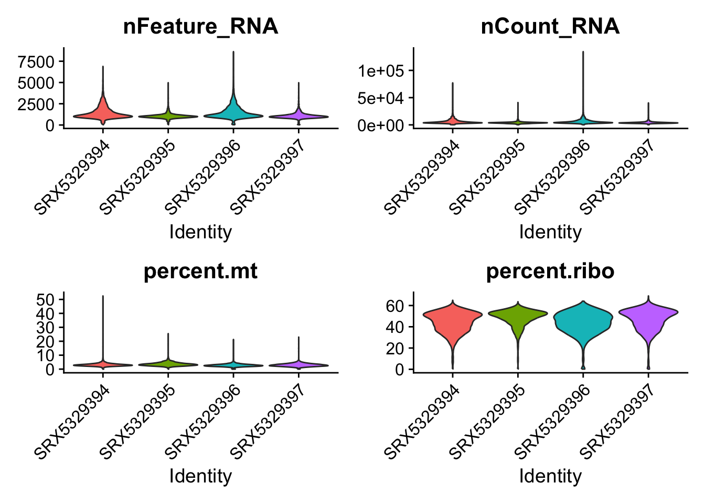
#>
#> SRX5329394 SRX5329395 SRX5329396 SRX5329397
#> 5667 5014 4966 4948# filter
obj <- subset(obj, subset = nFeature_RNA > 200 & nFeature_RNA < 5000 &
percent.mt < 10 & percent.ribo < 60)This data have high ribosomal gene content, that’s why we used high 60% cutoff.
The cutoff for nFeature_RNA, percent.ribo and percent.mt are kind of subjective.
It depends on your data, so always visualize your data first and then make the decision.
The mitochondrial content varies among different cell types and tissues. Metabolically active parenchymal cells and specialized cells such as neutrophils have higher mitochondrial gene expression, they may be filtered out if we use too stringent cutoffs.
Naive poised T cells are known to have higher ribosomal content, as are malignant cells.
Bonus: check this miQC: An adaptive probabilistic framework for quality control of single-cell RNA-sequencing data
Read also Biology-inspired data-driven quality control for scientific discovery in single-cell transcriptomics
Check how many cells for each sample after filtering
#>
#> SRX5329394 SRX5329395 SRX5329396 SRX5329397
#> 5552 4948 4778 47573.6 Routine Processing
Now we’re ready to run the standard Seurat workflow.
3.6.1 Why do we need dimensionality reduction?
Our data has ~20,000 dimensions (one per gene). You can’t cluster or visualize that directly. In high-dimensional space, distances become meaningless, noise dominates signal, and computation is slow. We need to reduce dimensions while keeping the interesting structure.
We do this in two stages:
First, PCA takes us from 20,000 genes down to ~30 principal components. PCA finds directions of maximum variance – you can think of PCs as linear combinations of genes that capture co-expression patterns. Most of the biological signal lives in the first 20-30 PCs; the rest is mostly noise.
Then, UMAP takes those 30 PCs down to 2 dimensions for visualization. UMAP preserves local neighborhood structure, so cells that are similar in 30-dimensional PC space stay close together in the 2D plot. It’s faster than t-SNE and generally preserves global structure better.
3.6.2 Why we need integration (Harmony)
Our four samples have technical variation – different library prep, different sequencing runs, different donors. Without batch correction, cells can cluster by sample rather than by cell type, which is not what we want.
Harmony works on the PC embeddings. Conceptually, it identifies cells that should be similar across batches, learns correction factors, and adjusts the embeddings to remove batch effects while preserving real biology (cell types, activation states).
When should you integrate? When you have multiple samples with expected technical variation and you care about biological differences, not batch differences. If your samples mix well on the UMAP without integration, you might not need it at all.
There are alternatives – FastMNN (mutual nearest neighbors, the OSCA default), scVI (deep learning-based, more powerful but more complex), and Seurat’s own CCA/RPCA methods. We use Harmony here because it’s fast, simple, and works well for typical batch correction.
3.6.2.1 But should you always integrate?
This is one of the most common questions I get. You’ve got PBMCs from multiple donors – do you integrate or not? The answer depends on your biological question.
If you integrate, cells cluster by cell type rather than by donor. Donor-specific and batch-specific differences get smoothed out, and you get a unified UMAP where the same cell types from different samples sit together. This is great when you want to count cell types across donors, annotate clusters consistently, or build a reference atlas.
If you don’t integrate, cells tend to cluster by donor, even within the same cell type. You retain sample-specific variation, but alignment across samples is harder.
Here’s my rule of thumb:
- Want to count B cells across donors? Integrate.
- Want to find activated B cells that only appear in COVID patients? Don’t integrate – you might smooth away exactly the signal you’re looking for.
In practice, I often do both: integrate first to get consistent cluster labels, then go back to the uncorrected data to ask condition-specific questions.
One important thing to understand about Harmony: it corrects only the PCA embeddings. It does not change the original count matrix or the normalized expression values. So after you get consistent cluster labels from the integrated analysis, you use the raw counts for differential expression across conditions within the same cell type. The integration affects clustering and UMAP, not the DE results.
For more on when to integrate and when not to, read:
- The OSCA book chapter on integration: https://bioconductor.org/books/3.20/OSCA.multisample/integrating-datasets.html#no-correction
- Valentine Svensson’s post on this topic: https://substack.com/@valentinesvensson/p-159305684
3.6.3 The pipeline in one code block
Let’s run everything at once, then we’ll unpack each step later:
#install.packages("harmony")
library(harmony)
obj<- obj %>%
NormalizeData(normalization.method = "LogNormalize", scale.factor = 10000) %>%
FindVariableFeatures(selection.method = "vst", nfeatures = 2000) %>%
ScaleData() %>%
RunPCA() %>%
RunHarmony(group.by.vars = "sample", dims.use = 1:30) %>%
RunUMAP(reduction = "harmony", dims = 1:30) %>%
FindNeighbors(reduction = "harmony", dims = 1:30) %>%
FindClusters(resolution = 0.4)#> Modularity Optimizer version 1.3.0 by Ludo Waltman and Nees Jan van Eck
#>
#> Number of nodes: 20035
#> Number of edges: 682274
#>
#> Running Louvain algorithm...
#> Maximum modularity in 10 random starts: 0.8666
#> Number of communities: 10
#> Elapsed time: 2 secondsWe just ran 8 functions in sequence using the pipe (%>%). Each function returns a modified Seurat object, which gets passed to the next one. The JoinLayers call at the end is a Seurat v5 thing – when you merge multiple samples, the data stays in separate layers (one per sample). Most functions handle this fine, but FindAllMarkers needs the layers joined into one. That’s the whole pipeline.
3.6.4 How to choose parameters
There’s no single “correct” set of parameters, but there are principled ways to choose them. Let me walk through each choice we made:
3.6.4.1 Normalization
We’re using LogNormalize here – it’s fast, interpretable, and good for exploratory analysis. The scale factor of 10,000 is just convention (makes normalized counts a similar scale to raw counts). Some people use 1e6 (CPM), but it doesn’t matter much for downstream clustering.
The main alternative is SCTransform, which does a better job of variance stabilization. Consider SCTransform if you have very heterogeneous datasets (lots of different cell types) or if you care about precise gene expression levels, not just clustering. It’s more computationally intensive but often gives better results.
3.6.4.2 Variable features
We use vst (variance stabilizing transformation), which is the default and works well. 2,000 features is the standard – it’s a good balance of signal vs noise. You can go as low as 500-1,000 (faster, but might miss subtle populations) or up to 5,000+ (but at that point you’re probably adding more noise than signal).
You can check your choice by plotting the variable features:
3.6.4.3 PCA dimensions
We use the first 30 PCs for downstream analysis. How do you decide? The elbow plot shows where adding more PCs stops explaining much variance:
A sharp drop-off suggests a clear signal vs noise boundary. A gradual decline means biological signal extends to many PCs.
As a rough guide: 10-15 PCs for small datasets with clear cell types (e.g., pure T cells), 20-30 for most datasets, and 40-50 for complex datasets with many cell types (e.g., whole organism atlas). We use 30 here – conservative, captures most biological variation without including noise PCs.
For heterogeneous datasets, err on the side of using more PCs (30-50). For homogeneous datasets, fewer PCs (15-30) are usually fine. The elbow plot is your guide. See sc-best-practices.org for more discussion.
3.6.4.4 Clustering resolution
Resolution = 0.4 gives us a moderate number of clusters. Lower resolution (0.1-0.4) gives fewer, broader clusters; higher resolution (0.8-2.0) gives many fine-grained clusters.
The right resolution depends on your question. Want major cell types? Use 0.2-0.5. Want cell subtypes and states? Try 0.8-1.5. In my experience, the best approach is to try multiple resolutions and compare:
# Try multiple resolutions
resolutions <- c(0.2, 0.4, 0.6, 0.8, 1.0)
obj <- FindClusters(obj, resolution = resolutions)
# Visualize with clustree
library(clustree)
clustree(obj, prefix = "RNA_snn_res.")clustree shows how clusters split as resolution increases – it helps you see which clusters are stable and which ones are artifacts of over-splitting.
We went with 0.4 here, which gives ~10 clusters. That’s reasonable granularity for PBMC T cells – we expect CD4 T, CD8 T, possibly NK, and activation states.
3.6.4.5 Integration
We’re correcting for the sample effect using the first 30 PCs. But do you actually need integration? Check first:
# Before integration: compute UMAP on uncorrected PCs
obj_uncorrected <- RunUMAP(obj, reduction = "pca", dims = 1:30)
DimPlot(obj_uncorrected, group.by = "sample")
# After integration: compute UMAP on Harmony-corrected PCs
DimPlot(obj, group.by = "sample")If samples already mix well before integration, you might not need it at all. Don’t integrate just because everyone else does.
If you do need it, you can also try FastMNN for stronger batch effects, or use group.by.vars = c("sample", "donor") to correct for multiple batch variables at once.
3.6.5 Our parameter choices for this dataset
| Parameter | Value | Rationale |
|---|---|---|
| Normalization | LogNormalize | Fast, good for exploration |
| Variable features | 2,000 | Standard, balances signal/noise |
| PCs used | 30 | Captures most variance (see elbow plot) |
| Integration | Harmony on sample | Removes technical batch effects |
| Clustering resolution | 0.4 | Moderate granularity (~10 clusters) |
These aren’t magic numbers – they’re informed choices. Always explore your data, try alternatives, and see what makes biological sense.
3.7 remove other low quality cells
#>
#> 0 1 2 3 4 5 6 7 8 9
#> 4519 3814 3541 3170 2674 1216 490 381 183 47cluster 8 and 9 seems to be very different from other clusters. Let’s do more investigation.
Stacked_VlnPlot(seurat_object = obj,
features = c("percent.mt", "percent.ribo"),
x_lab_rotate = TRUE)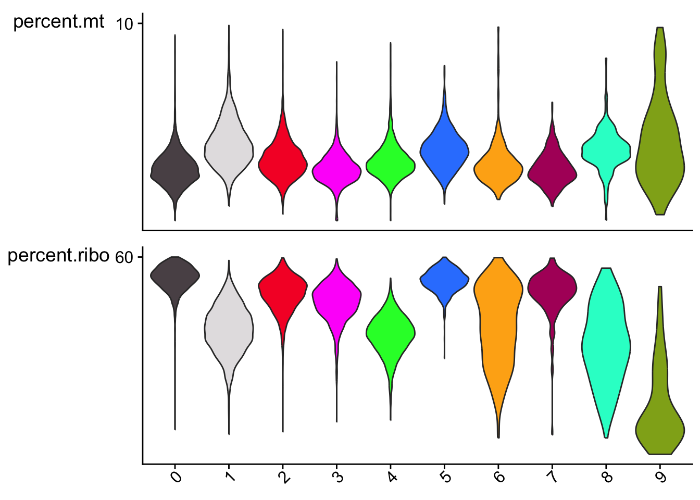
cluster 9 seems to have very low ribosomal gene content compared with others.
Stacked_VlnPlot(seurat_object = obj,
features = c("nCount_RNA", "nFeature_RNA"),
x_lab_rotate = TRUE)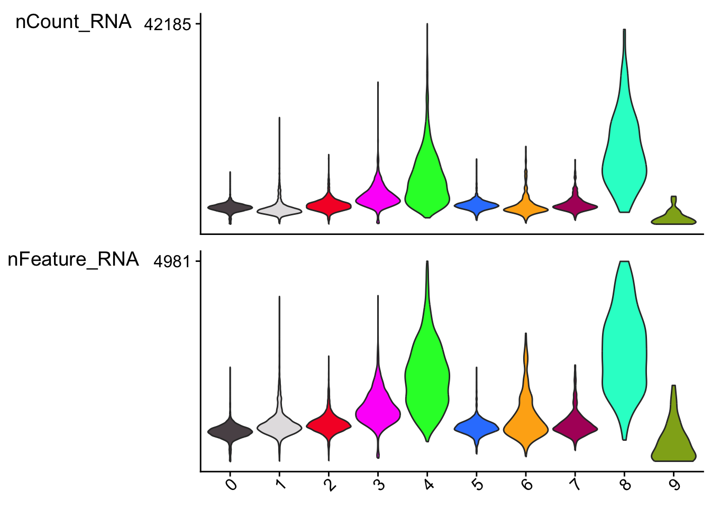
cluster 8 seems to have high RNA counts and cluster 9 has the lowest RNA counts.Let’s see what are the marker genes for cluster 8 and 9.
markers_seurat<- FindAllMarkers(obj)
markers_seurat %>%
dplyr::filter(cluster == 9) %>%
arrange(p_val_adj) %>%
head(n=20)#> p_val avg_log2FC pct.1 pct.2 p_val_adj cluster
#> CSF2RB.2 0.000000e+00 10.676391 0.511 0.006 0.000000e+00 9
#> FCGR2B.1 0.000000e+00 13.059974 0.447 0.001 0.000000e+00 9
#> GCSAML.1 0.000000e+00 13.220687 0.404 0.001 0.000000e+00 9
#> ATP10D 0.000000e+00 10.937205 0.404 0.002 0.000000e+00 9
#> SERPINB2.1 0.000000e+00 10.481972 0.340 0.001 0.000000e+00 9
#> AL031429.1 0.000000e+00 14.752080 0.319 0.000 0.000000e+00 9
#> AKAP12.1 0.000000e+00 10.682504 0.319 0.001 0.000000e+00 9
#> C5AR1.1 0.000000e+00 11.313491 0.277 0.001 0.000000e+00 9
#> HDC.1 0.000000e+00 10.133503 0.255 0.001 0.000000e+00 9
#> ALDH1A2.1 0.000000e+00 13.280818 0.234 0.001 0.000000e+00 9
#> PTGER3.1 0.000000e+00 11.807278 0.191 0.000 0.000000e+00 9
#> HCAR3 0.000000e+00 14.804206 0.191 0.000 0.000000e+00 9
#> KCNJ2 0.000000e+00 12.212127 0.128 0.000 0.000000e+00 9
#> GATA2.1 5.599270e-301 9.009744 0.383 0.004 2.049389e-296 9
#> IL1B.1 7.449074e-274 10.060082 0.298 0.003 2.726436e-269 9
#> AP002813.1.1 3.935682e-264 9.767981 0.213 0.001 1.440499e-259 9
#> IL3RA.1 2.350128e-216 9.385981 0.277 0.003 8.601702e-212 9
#> FCGR2A.1 8.991486e-215 9.951732 0.213 0.002 3.290974e-210 9
#> MIR3945HG.1 4.575186e-208 10.058980 0.191 0.001 1.674564e-203 9
#> NTRK1.1 9.059009e-207 10.480960 0.234 0.002 3.315688e-202 9
#> gene
#> CSF2RB.2 CSF2RB
#> FCGR2B.1 FCGR2B
#> GCSAML.1 GCSAML
#> ATP10D ATP10D
#> SERPINB2.1 SERPINB2
#> AL031429.1 AL031429.1
#> AKAP12.1 AKAP12
#> C5AR1.1 C5AR1
#> HDC.1 HDC
#> ALDH1A2.1 ALDH1A2
#> PTGER3.1 PTGER3
#> HCAR3 HCAR3
#> KCNJ2 KCNJ2
#> GATA2.1 GATA2
#> IL1B.1 IL1B
#> AP002813.1.1 AP002813.1
#> IL3RA.1 IL3RA
#> FCGR2A.1 FCGR2A
#> MIR3945HG.1 MIR3945HG
#> NTRK1.1 NTRK1The top marker gene for cluster 9 are CSF2RB, FCGR2B.
I usually go to Human Protein Atlas to find out what are those marker genes. https://www.proteinatlas.org/ENSG00000100368-CSF2RB/immune+cell https://www.proteinatlas.org/ENSG00000072694-FCGR2B/immune+cell
Both of them seems to be a marker for Basophil/Neutrophi.
How about cluster 8?
#> p_val avg_log2FC pct.1 pct.2 p_val_adj cluster gene
#> HLA.DRA.7 0 7.423188 0.984 0.033 0 8 HLA.DRA
#> HLA.DRB1.8 0 5.021281 0.918 0.082 0 8 HLA.DRB1
#> FSCN1.3 0 9.433710 0.749 0.008 0 8 FSCN1
#> HLA.DQB1.8 0 5.086356 0.776 0.036 0 8 HLA.DQB1
#> LYN.5 0 5.773855 0.678 0.009 0 8 LYN
#> BASP1.6 0 9.159140 0.650 0.004 0 8 BASP1
#> HLA.DQA1.6 0 7.493953 0.650 0.009 0 8 HLA.DQA1
#> TNFAIP2 0 10.684065 0.634 0.001 0 8 TNFAIP2
#> HLA.DMA.7 0 4.232243 0.661 0.030 0 8 HLA.DMA
#> EBI3.6 0 8.899144 0.634 0.005 0 8 EBI3
#> MGLL.1 0 8.891593 0.628 0.002 0 8 MGLL
#> CD40.3 0 6.757430 0.612 0.012 0 8 CD40
#> MARCKS 0 9.591155 0.579 0.002 0 8 MARCKS
#> PTGIR.5 0 4.283816 0.579 0.032 0 8 PTGIR
#> SWAP70.4 0 6.055084 0.546 0.007 0 8 SWAP70
#> C15orf48.5 0 7.368369 0.541 0.010 0 8 C15orf48
#> IDO1.3 0 8.426527 0.530 0.004 0 8 IDO1
#> TSPAN33.3 0 6.501183 0.514 0.007 0 8 TSPAN33
#> CSF2RA.4 0 6.994637 0.508 0.004 0 8 CSF2RA
#> RAB13 0 7.760664 0.503 0.002 0 8 RAB13A couple of HLA genes followed by FSCN1 and LYN. They are markers for Dendritic cells and monocytes.
So cluster 8 and cluster 9 are possible contamination from the experiment. While the authors used magnetic negative selection for CD3+ T cells to enrich for T cells, it is not 100% pure. We’ll remove them after doublet detection and ambient RNA removal below.
Again, the decision we made here depends on our understanding of the experimental design and the biology background. Always work with a wet biologist closely when analyzing a dataset.
3.8 Understanding the math behind each step
OK, so the pipeline above is only a couple lines of code, but there’s a lot happening under the hood. Let’s go through the important parts.
3.8.1 Why do we normalize?
Different cells have different total UMI counts (library sizes). Some of this is technical (sequencing depth), some is biological (some cells are just more transcriptionally active). Here’s the problem: a gene with 100 counts in cell A (10,000 total UMIs) vs 50 counts in cell B (5,000 total UMIs) looks differentially expressed – but it’s actually expressed at the same proportion. We normalize by library size to make cells comparable.
3.8.2 LogNormalize: what exactly does it do?
NormalizeData() does three things: divide by library size (total UMIs per cell), multiply by a scale factor (default 10,000), and natural log transform (with a pseudocount of +1).
The formula:
\[ \text{norm}_{ij} = \log\left(\frac{X_{ij}}{\sum_{j} X_{ij}} \times 10000 + 1\right) \]
Where \(X_{ij}\) is the raw count for gene \(i\) in cell \(j\), and \(\sum_{j} X_{ij}\) is the total UMI count for cell \(j\) (the library size).
Why log transform? Three reasons: it stabilizes variance (raw counts have heavy tails), it turns fold changes into differences (easier for linear models), and it scales genes to similar ranges so highly expressed genes don’t dominate PCA.
Don’t just take my word for it – let’s verify this manually:
The raw counts for the first 6 cells:
raw_counts<- obj@assays$RNA$counts[c("CD3D", "CD3E", "CD8B"), 1:6]
# turn it to a dense matrix
raw_counts<- as.matrix(raw_counts)The normalized counts:
#> 3 x 6 sparse Matrix of class "dgCMatrix"
#> SRX5329394_TCAGCTCGTATTACCG SRX5329394_GTACTTTAGTGTCTCA
#> CD3D 0.7752327 1.5020506
#> CD3E 0.9405786 0.5295558
#> CD8B 0.3295669 .
#> SRX5329394_CTGATAGTCATGCATG SRX5329394_TGAGAGGCATCACGAT
#> CD3D 1.8856456 1.3999920
#> CD3E 0.7875421 0.3621765
#> CD8B . .
#> SRX5329394_AACCATGCATGGTCAT SRX5329394_TGTGGTACATCATCCC
#> CD3D 0.3336057 1.5781548
#> CD3E . 0.9315349
#> CD8B 0.3336057 .the sum of all genes per cell:
#> SRX5329394_TCAGCTCGTATTACCG SRX5329394_GTACTTTAGTGTCTCA
#> 25617 28646
#> SRX5329394_CTGATAGTCATGCATG SRX5329394_TGAGAGGCATCACGAT
#> 25042 22912
#> SRX5329394_AACCATGCATGGTCAT SRX5329394_TGTGGTACATCATCCC
#> 25253 26001divide the raw counts by the total counts per column. If you divide a matrix by a vector, it is by row; so we first transpose the matrix, divide it and then transpose it back
add a psedocount of 1:
#> SRX5329394_TCAGCTCGTATTACCG SRX5329394_GTACTTTAGTGTCTCA
#> CD3D 1.171097e-04 3.490889e-04
#> CD3E 1.561463e-04 6.981778e-05
#> CD8B 3.903658e-05 0.000000e+00
#> SRX5329394_CTGATAGTCATGCATG SRX5329394_TGAGAGGCATCACGAT
#> CD3D 0.0005590608 3.055168e-04
#> CD3E 0.0001197987 4.364525e-05
#> CD8B 0.0000000000 0.000000e+00
#> SRX5329394_AACCATGCATGGTCAT SRX5329394_TGTGGTACATCATCCC
#> CD3D 3.959926e-05 0.0003846006
#> CD3E 0.000000e+00 0.0001538402
#> CD8B 3.959926e-05 0.0000000000times a scaling factor (default is 10^4) and then natural log:
#> SRX5329394_TCAGCTCGTATTACCG SRX5329394_GTACTTTAGTGTCTCA
#> CD3D 0.7752327 1.5020506
#> CD3E 0.9405786 0.5295558
#> CD8B 0.3295669 0.0000000
#> SRX5329394_CTGATAGTCATGCATG SRX5329394_TGAGAGGCATCACGAT
#> CD3D 1.8856456 1.3999920
#> CD3E 0.7875421 0.3621765
#> CD8B 0.0000000 0.0000000
#> SRX5329394_AACCATGCATGGTCAT SRX5329394_TGTGGTACATCATCCC
#> CD3D 0.3336057 1.5781548
#> CD3E 0.0000000 0.9315349
#> CD8B 0.3336057 0.0000000#> [1] TRUEThey match. This is pretty cool – our manual calculation reproduces Seurat’s normalization exactly. Now you know what’s happening under the hood.
3.8.3 When to use different normalization methods
LogNormalize is the default, but it’s not always the best choice. Let me walk through the options.
LogNormalize (what we used) is fast, memory-efficient, and interpretable. It works well for homogeneous datasets (e.g., all T cells, all neurons) and exploratory clustering. The downside: it doesn’t model the mean-variance relationship and can be dominated by highly expressed genes.
SCTransform:
SCTransform uses a regularized negative binomial model for better variance stabilization. It accounts for the mean-variance relationship and can regress out technical covariates (MT%, cell cycle). It often improves clustering and DE testing. The tradeoff is that it’s slower, more memory-intensive, and can over-correct if you’re not careful.
Use SCTransform for heterogeneous datasets with many cell types, when you need precise variance estimates, or when you want to regress out confounders. It’s now recommended over LogNormalize for most analyses (see Choudhary & Satija 2022), and recent Seurat versions have made it faster.
scran normalization:
library(scran)
# Deconvolution-based normalization (OSCA approach)
sce <- computeSumFactors(sce, clusters = quickCluster(sce))
sce <- logNormCounts(sce)scran uses deconvolution-based normalization that accounts for composition biases (different cell types have different total RNA content). It’s the approach recommended by the OSCA book and works well for multi-sample experiments. The downside is you need to switch to the SingleCellExperiment framework.
Use scran when you have strong composition biases (e.g., comparing embryonic stages) or when you want the theoretical guarantees that come with the OSCA approach.
3.8.4 Which normalization should you use?
For this tutorial, we use LogNormalize because it’s fast, interpretable, and our dataset is relatively homogeneous (all PBMCs, mostly T cells). For your own analysis, I’d suggest starting with LogNormalize to explore quickly. If clustering looks noisy or dominated by technical variation, try SCTransform. For publication-quality analysis, it’s worth comparing results with multiple normalization methods.
One nice trick – you can store multiple normalized versions in the same Seurat object:
# Keep LogNormalize in the RNA assay
obj <- NormalizeData(obj)
# Add SCTransform as a separate assay
obj <- SCTransform(obj, assay = "RNA", new.assay.name = "SCT")
# Switch between them
DefaultAssay(obj) <- "RNA" # Use LogNormalize
DefaultAssay(obj) <- "SCT" # Use SCTransformThis lets you compare results without re-running the entire pipeline.
3.8.5 Find Variable Genes
We have genes in the original count matrix, and not all of them are informative for downstream analysis. That’s why FindVariableFeatures to find the top 2000 most variable genes. If you read the help page, Seurat implements the selection.method: vst, mean.var.plot and dispersion.
variable here means big variance of the same gene across all cells.
The exact implementation can be complicated, but you only need to get the gist of it (like I do).
Given a random matrix:
#> [,1] [,2] [,3] [,4] [,5]
#> [1,] -0.56047565 -1.06782371 -0.69470698 0.37963948 0.005764186
#> [2,] -0.23017749 -0.21797491 -0.20791728 -0.50232345 0.385280401
#> [3,] 1.55870831 -1.02600445 -1.26539635 -0.33320738 -0.370660032
#> [4,] 0.07050839 -0.72889123 2.16895597 -1.01857538 0.644376549
#> [5,] 0.12928774 -0.62503927 1.20796200 -1.07179123 -0.220486562
#> [6,] 1.71506499 -1.68669331 -1.12310858 0.30352864 0.331781964
#> [7,] 0.46091621 0.83778704 -0.40288484 0.44820978 1.096839013
#> [8,] -1.26506123 0.15337312 -0.46665535 0.05300423 0.435181491
#> [9,] -0.68685285 -1.13813694 0.77996512 0.92226747 -0.325931586
#> [10,] -0.44566197 1.25381492 -0.08336907 2.05008469 1.148807618
#> [11,] 1.22408180 0.42646422 0.25331851 -0.49103117 0.993503856
#> [12,] 0.35981383 -0.29507148 -0.02854676 -2.30916888 0.548396960
#> [13,] 0.40077145 0.89512566 -0.04287046 1.00573852 0.238731735
#> [14,] 0.11068272 0.87813349 1.36860228 -0.70920076 -0.627906076
#> [15,] -0.55584113 0.82158108 -0.22577099 -0.68800862 1.360652449
#> [16,] 1.78691314 0.68864025 1.51647060 1.02557137 -0.600259587
#> [17,] 0.49785048 0.55391765 -1.54875280 -0.28477301 2.187332993
#> [18,] -1.96661716 -0.06191171 0.58461375 -1.22071771 1.532610626
#> [19,] 0.70135590 -0.30596266 0.12385424 0.18130348 -0.235700359
#> [20,] -0.47279141 -0.38047100 0.21594157 -0.13889136 -1.026420900We can then calculate the variance per row
library(ComplexHeatmap)
gene_variance<- apply(mat_random, 1, var)
# order returns the index of each element in increasing order by default
# use -gene_variance to get it by decreaseing order, or
# set decreasing = TRUE#> [1] 18 17 6 4 12 3 10 16 14 9 15 5 11 8 1 7 20 13 19 2#> [1] 18 17 6 4 12 3 10 16 14 9 15 5 11 8 1 7 20 13 19 2This gives you the same result
Let’s take the top 10 genes
or use genefilter bioconductor package:
# BiocManager::install("genefilter")
library(genefilter)
rv<- rowVars(mat_random)
idx<- order(-rv)[1:10]
Heatmap(mat_random[idx,])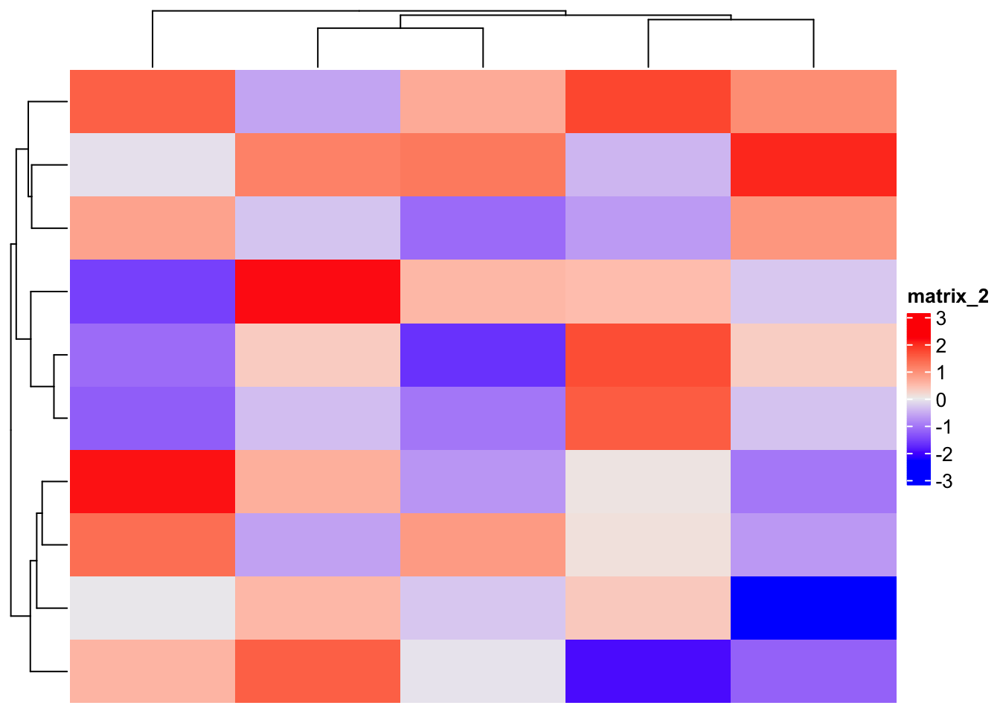
They give you the same results.
3.8.6 visualization
scCustomize is a package which provides richer visualization than the Seurat package. Let’s use it.
Disclaimer: I contributed several functions to this package.

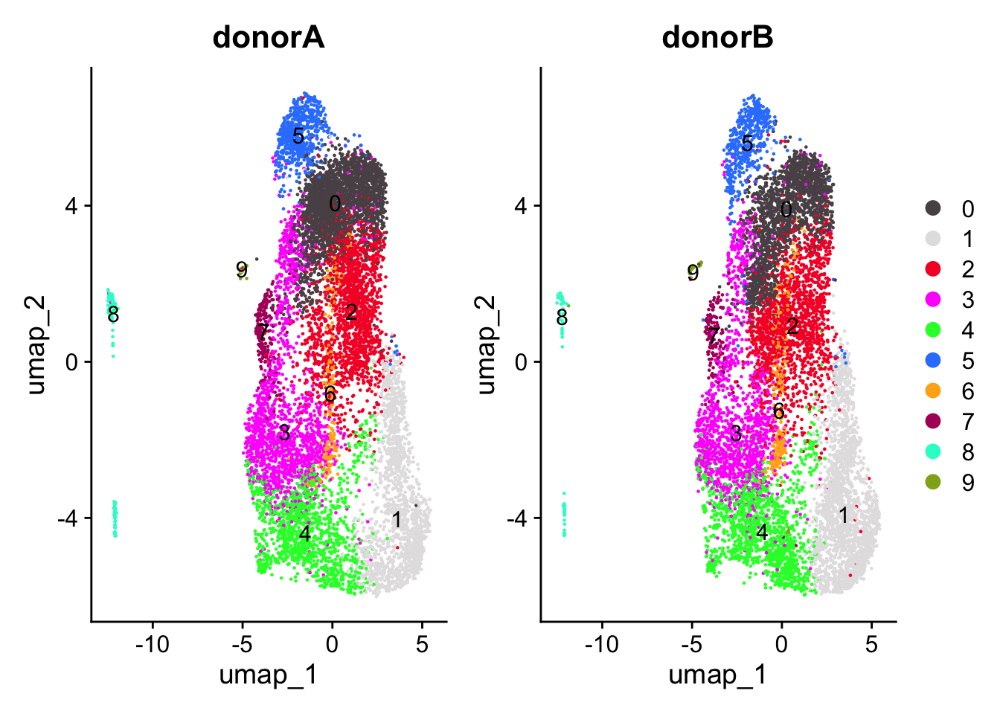
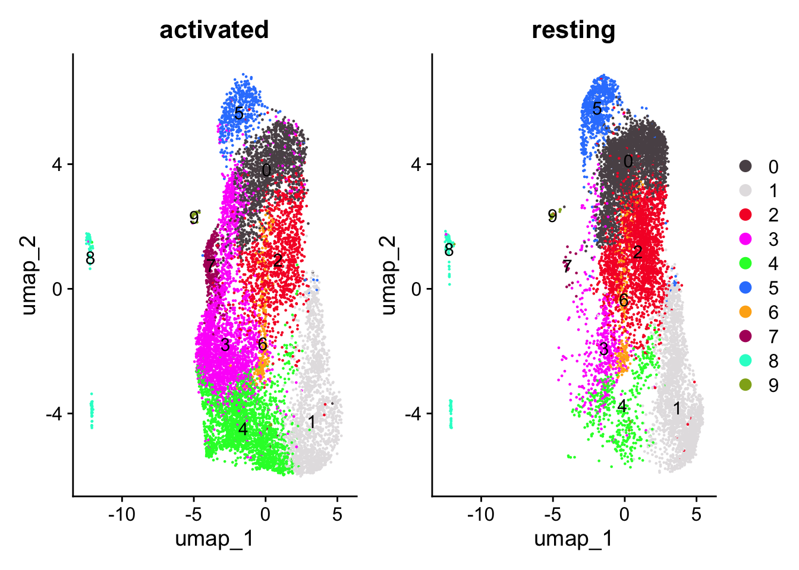
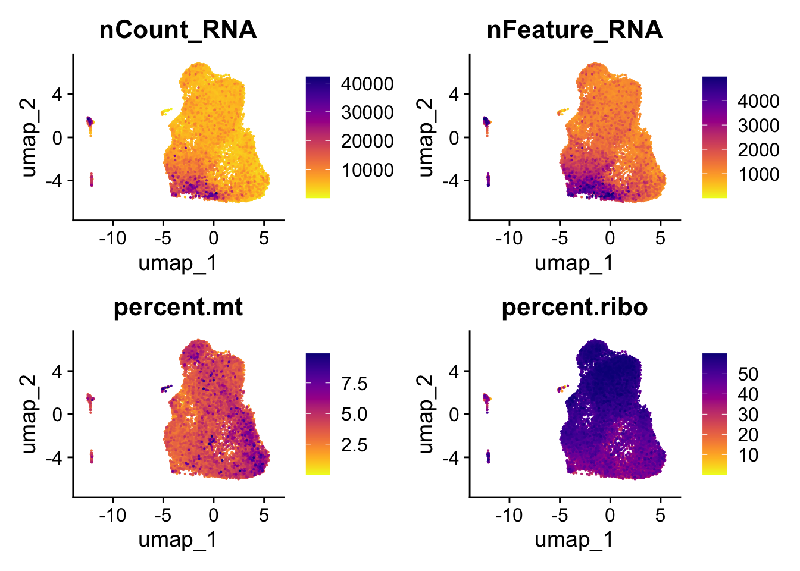
Let’s plot some marker genes.
T cells : CD3D CD4T cells: CD4, CD8T cells: CD8A, CD8B
# BiocManager::install("ComplexHeatmap")
features_to_plot<- c("CD3D", "CD3E", "PTPRC", "CD4", "CD8A", "CD8B", "FOXP3",
"TIGIT", "CTLA4", "PDCD1", "KLRB1",
"PRF1", "GZMB","IL7R", "SELL", "NKG7",
"MKI67")
Clustered_DotPlot(obj, features = features_to_plot, plot_km_elbow = FALSE)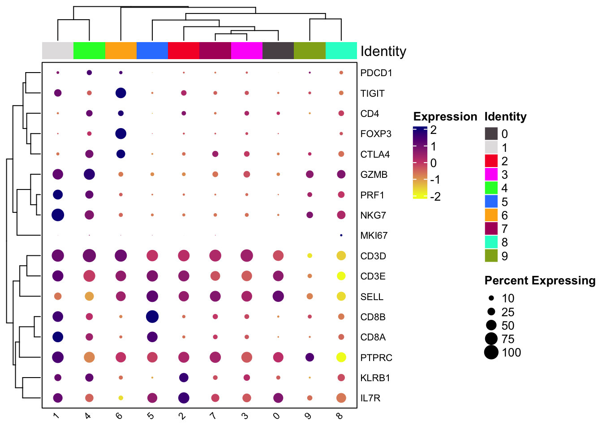
#>
#> TRUE
#> 17Is there any difference between the resting and activated conditions?
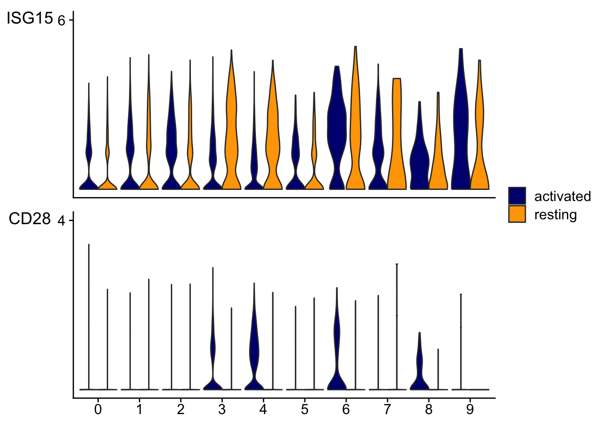
3.8.7 Finding cluster markers with differential expression
Now that we have clusters, the obvious question is: what genes define each cluster? We want to find genes that are highly expressed in one cluster and lowly expressed in others.
3.8.7.1 Seurat’s FindAllMarkers (default: Wilcoxon)
# Seurat's built-in method
markers_seurat <- FindAllMarkers(obj, only.pos = TRUE)
head(markers_seurat)#> p_val avg_log2FC pct.1 pct.2 p_val_adj cluster gene
#> TSHZ2 0 1.4975416 0.539 0.267 0 0 TSHZ2
#> FHIT 0 2.4021427 0.375 0.110 0 0 FHIT
#> SNHG32 0 1.1283325 0.817 0.582 0 0 SNHG32
#> PNRC1 0 0.8595533 0.863 0.714 0 0 PNRC1
#> BTG1 0 0.7437467 0.963 0.872 0 0 BTG1
#> GAS5 0 0.9012977 0.976 0.896 0 0 GAS5#> [1] p_val avg_log2FC pct.1 pct.2 p_val_adj cluster gene
#> <0 rows> (or 0-length row.names)For each cluster, this compares gene expression vs all other clusters using the Wilcoxon rank-sum test (non-parametric). It returns p-values, adjusted p-values (FDR), log2FC, pct.1 (percent of cells in the cluster expressing the gene), and pct.2 (percent in all other clusters).
FindAllMarkers used to be painfully slow, but Seurat v5 integrated BPCells and it’s now much faster. Wilcoxon is robust (no normality assumption needed) and gives interpretable statistics. The caveats: it doesn’t account for covariates (batch, donor), the p-values are overly optimistic because it treats cells as independent (they’re not!), and the log2FC calculation has some nuances (more on that below).
By default, FindAllMarkers uses Wilcoxon Rank Sum test. See ?FindAllMarkers for other tests:
- test.use = "wilcox": Wilcoxon (default)
- test.use = "t": Student’s t-test
- test.use = "negbinom": Negative binomial
- test.use = "MAST": Model-based analysis (slower, accounts for cellular detection rate)
3.8.7.2 presto::wilcoxauc (much faster)
# remotes::install_github('immunogenomics/presto')
library(presto)
markers_presto <- wilcoxauc(obj, 'seurat_clusters')
head(markers_presto)Same Wilcoxon test as Seurat, but with a much faster C++ implementation. Use it when you have large datasets (>50k cells) and just need speed. The output format is slightly different (wide format), but the statistics are equivalent.
3.8.7.3 Pseudo-bulk + DESeq2/edgeR (for multi-sample comparisons)
Here’s something important that a lot of people get wrong: each cell is not an independent observation. Cells from the same sample are correlated, so treating them as independent inflates false positives. For multi-sample/multi-condition comparisons, you should aggregate counts to pseudo-bulk per sample, then use DESeq2 or edgeR. See the sc-best-practices.org differential expression chapter for more details.
Use pseudo-bulk when you have biological replicates, when you want to compare conditions (activated vs resting T cells), or when you need proper statistical inference. For exploratory marker gene discovery within one sample, Wilcoxon is fine.
We’re doing exploratory marker discovery here, so Wilcoxon is appropriate. For comparing activated vs resting conditions properly, you’d want the pseudo-bulk approach. (we will go over it in the later of this chapter).
3.8.7.4 Comparing DE methods
| Method | Speed | Accounts for Replicates | Use Case |
|---|---|---|---|
| FindAllMarkers (Wilcoxon) | Fast | No | Quick exploration, marker discovery |
| presto | Very fast | No | Large datasets, need speed |
| MAST | Slow | Partial | Single-cell DE with covariates |
| Pseudo-bulk + DESeq2 | Medium | Yes | Multi-sample comparisons (proper stats) |
Bottom line: for marker discovery (what we’re doing), Wilcoxon is fast and fine. For condition comparisons, use the pseudo-bulk approach with proper replicates.
Note that the p-values are very small. When you have hundreds or thousands of cells per cluster, the p-values will be very small. The p-value in statistical tests, including the Wilcoxon rank-sum test (also known as the Mann-Whitney U test), is influenced by both the sample size and the effect size (the magnitude of the difference between the groups being compared).
Generally, as the sample size increases, the p-value tends to decrease, assuming there is a non-zero effect size.
3.8.7.5 How log2 Fold change is calculated?
There is nuances in how the log2 Fold change is calculated. Scanpy and Seurathave different implementations. See this twitter thread https://twitter.com/lpachter/status/1694387749967847874
Old Seurat formula:
\(R_{g}=\log_{2}(\frac{1}{n_{1}}\sum_{i\in G_{1}}(exp(Y_{ig})-1)+1)-log_{2}(\frac{1}{n_{2}}\sum_{i\in G_{2}}(exp(Y_{ig})-1)+1),\)
New Seurat formula (instead of plus 1, it uses a small value \(\epsilon\):
\(R_{g}=\log_{2}(\frac{1}{n_{1}}\sum_{i\in G_{1}}(exp(Y_{ig})-1)+\epsilon)-log_{2}(\frac{1}{n_{2}}\sum_{i\in G_{2}}(exp(Y_{ig})-1)+\epsilon),\)
Scanpy formula:
\(P_{g}=\log_{2}(exp(\frac{1}{n_{1}}\sum_{i\in G_{1}}Y_{ig})-1+\epsilon)-log_{2}(exp(\frac{1}{n_{2}}\sum_{i\in G_{2}}Y_{ig})-1+\epsilon),\)
where \(\epsilon=10^{-9}\).
where \(Y_{ig}\) are the log-transformed expression values for cell \(i\) and gene \(g\), \(G_{1}\) and \(G_{2}\) are the indices for two groups of cells, and \(n_{1}\) and \(n_{2}\) are the numbers of cells in the respective groups.
Let’s use GZMB as an example:
log_normalized_data<- obj[["RNA"]]$data["GZMB", ]
# a logical vector indicating the cells from cluster 0
cluster_0_index<- obj$seurat_clusters == 0
# negate it to get the cells from all other clusters
other_clusters_index<- !cluster_0_index
# the natural log normalized counts for gene x from cluster 0
cluster_0_norm_data<- log_normalized_data[cluster_0_index]
# the natural log normalized counts for gene x from all other clusters
other_cluster_norm_data<- log_normalized_data[other_clusters_index]
# exp it back and minus 1 to get the lib normalized counts without log transform
# take the mean across cells plus a tiny number, then log2 transform
# cells from cluster 0
log2_mean_cluster0<- log2(mean(expm1(cluster_0_norm_data) + 10^-9))
## expm1(x) commputes exp(x)-1 accurately also for |x|<<1
## see Seurat code https://github.com/satijalab/seurat/blob/master/R/differential_expression.R#L1070
# cells from all other clusters
log2_mean_other_cluster<- log2(mean(expm1(other_cluster_norm_data) + 10^-9))
# log2 fold change
log2_mean_cluster0 - log2_mean_other_cluster#> [1] -5.368301#> [1] p_val avg_log2FC pct.1 pct.2 p_val_adj cluster gene
#> <0 rows> (or 0-length row.names)hmm, it is very close, but a little different..
Let’s calculate the percentage in and percentage out of GZMB cells:
#> [1] 0.06284576#> [1] 0.3511214This is the same as the FindAllMarkers results.
If we use the old Seurat formula:
#> [1] -3.591158The log2 fold change is way different.
3.9 Doublet detection
In droplet-based scRNA-seq, sometimes two cells get captured in the same droplet. The resulting “cell” has a mixed transcriptome from both, and it can really mess up your analysis – doublets often end up between clusters on a UMAP, or they form their own weird cluster that looks like a hybrid cell type that doesn’t actually exist.
The expected doublet rate depends on how many cells you load. For 10x Genomics, it’s roughly 0.8% per 1,000 cells captured. So if you captured 10,000 cells, expect around 8% doublets. That’s not trivial.
There are several computational doublet detection tools. A benchmarking paper by Xi and Li (2021) compared many of them. I like scDblFinder – it’s fast, accurate, and works well in practice. See also the OSCA chapter on doublet detection for a thorough discussion of the different approaches.
The basic idea: scDblFinder simulates artificial doublets by combining random pairs of cells, then trains a classifier to distinguish real cells from these artificial doublets. Cells that look similar to the artificial doublets get flagged.
scDblFinder works with SingleCellExperiment objects, so we convert from Seurat first. We pass clusters = "ident" so it knows the cluster assignments – this helps it avoid flagging cells that sit between clusters as doublets when they’re actually real transitional states.
#> DataFrame with 20035 rows and 11 columns
#> orig.ident nCount_RNA nFeature_RNA sample
#> <character> <numeric> <integer> <character>
#> SRX5329394_TCAGCTCGTATTACCG SRX5329394 25617 3948 SRX5329394
#> SRX5329394_GTACTTTAGTGTCTCA SRX5329394 28646 4292 SRX5329394
#> SRX5329394_CTGATAGTCATGCATG SRX5329394 25042 3773 SRX5329394
#> SRX5329394_TGAGAGGCATCACGAT SRX5329394 22912 3699 SRX5329394
#> SRX5329394_AACCATGCATGGTCAT SRX5329394 25253 4367 SRX5329394
#> ... ... ... ... ...
#> SRX5329397_TCACGAAGTTAGTGGG SRX5329397 842 345 SRX5329397
#> SRX5329397_GTCGGGTAGTACGCGA SRX5329397 2515 633 SRX5329397
#> SRX5329397_CGTGTAAAGGCACATG SRX5329397 1927 801 SRX5329397
#> SRX5329397_TAGTGGTAGAAACCGC SRX5329397 1264 441 SRX5329397
#> SRX5329397_CAGTCCTCAATCCGAT SRX5329397 429 250 SRX5329397
#> condition donor percent.mt percent.ribo
#> <character> <character> <numeric> <numeric>
#> SRX5329394_TCAGCTCGTATTACCG activated donorA 3.42741 30.1050
#> SRX5329394_GTACTTTAGTGTCTCA activated donorA 2.11897 33.5440
#> SRX5329394_CTGATAGTCATGCATG activated donorA 2.77933 36.8421
#> SRX5329394_TGAGAGGCATCACGAT activated donorA 3.96735 32.7339
#> SRX5329394_AACCATGCATGGTCAT activated donorA 3.57581 41.6149
#> ... ... ... ... ...
#> SRX5329397_TCACGAAGTTAGTGGG resting donorB 1.06888 52.01900
#> SRX5329397_GTCGGGTAGTACGCGA resting donorB 3.02187 59.64215
#> SRX5329397_CGTGTAAAGGCACATG resting donorB 5.65646 31.86300
#> SRX5329397_TAGTGGTAGAAACCGC resting donorB 2.84810 50.15823
#> SRX5329397_CAGTCCTCAATCCGAT resting donorB 9.79021 6.52681
#> RNA_snn_res.0.4 seurat_clusters ident
#> <factor> <factor> <factor>
#> SRX5329394_TCAGCTCGTATTACCG 8 8 8
#> SRX5329394_GTACTTTAGTGTCTCA 4 4 4
#> SRX5329394_CTGATAGTCATGCATG 4 4 4
#> SRX5329394_TGAGAGGCATCACGAT 8 8 8
#> SRX5329394_AACCATGCATGGTCAT 8 8 8
#> ... ... ... ...
#> SRX5329397_TCACGAAGTTAGTGGG 0 0 0
#> SRX5329397_GTCGGGTAGTACGCGA 5 5 5
#> SRX5329397_CGTGTAAAGGCACATG 1 1 1
#> SRX5329397_TAGTGGTAGAAACCGC 1 1 1
#> SRX5329397_CAGTCCTCAATCCGAT 9 9 9sce.dbl <- scDblFinder(sce, clusters = "ident")
scater::plotUMAP(sce.dbl, colour_by="scDblFinder.score")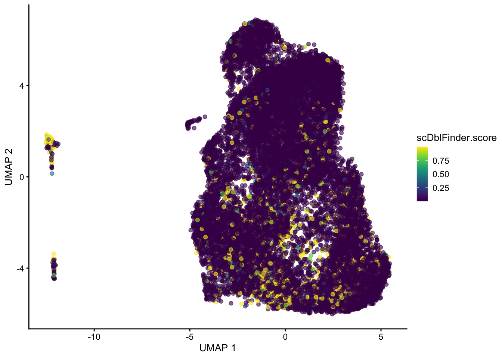
#> DataFrame with 20035 rows and 19 columns
#> orig.ident nCount_RNA nFeature_RNA sample
#> <character> <numeric> <integer> <character>
#> SRX5329394_TCAGCTCGTATTACCG SRX5329394 25617 3948 SRX5329394
#> SRX5329394_GTACTTTAGTGTCTCA SRX5329394 28646 4292 SRX5329394
#> SRX5329394_CTGATAGTCATGCATG SRX5329394 25042 3773 SRX5329394
#> SRX5329394_TGAGAGGCATCACGAT SRX5329394 22912 3699 SRX5329394
#> SRX5329394_AACCATGCATGGTCAT SRX5329394 25253 4367 SRX5329394
#> ... ... ... ... ...
#> SRX5329397_TCACGAAGTTAGTGGG SRX5329397 842 345 SRX5329397
#> SRX5329397_GTCGGGTAGTACGCGA SRX5329397 2515 633 SRX5329397
#> SRX5329397_CGTGTAAAGGCACATG SRX5329397 1927 801 SRX5329397
#> SRX5329397_TAGTGGTAGAAACCGC SRX5329397 1264 441 SRX5329397
#> SRX5329397_CAGTCCTCAATCCGAT SRX5329397 429 250 SRX5329397
#> condition donor percent.mt percent.ribo
#> <character> <character> <numeric> <numeric>
#> SRX5329394_TCAGCTCGTATTACCG activated donorA 3.42741 30.1050
#> SRX5329394_GTACTTTAGTGTCTCA activated donorA 2.11897 33.5440
#> SRX5329394_CTGATAGTCATGCATG activated donorA 2.77933 36.8421
#> SRX5329394_TGAGAGGCATCACGAT activated donorA 3.96735 32.7339
#> SRX5329394_AACCATGCATGGTCAT activated donorA 3.57581 41.6149
#> ... ... ... ... ...
#> SRX5329397_TCACGAAGTTAGTGGG resting donorB 1.06888 52.01900
#> SRX5329397_GTCGGGTAGTACGCGA resting donorB 3.02187 59.64215
#> SRX5329397_CGTGTAAAGGCACATG resting donorB 5.65646 31.86300
#> SRX5329397_TAGTGGTAGAAACCGC resting donorB 2.84810 50.15823
#> SRX5329397_CAGTCCTCAATCCGAT resting donorB 9.79021 6.52681
#> RNA_snn_res.0.4 seurat_clusters ident
#> <factor> <factor> <factor>
#> SRX5329394_TCAGCTCGTATTACCG 8 8 8
#> SRX5329394_GTACTTTAGTGTCTCA 4 4 4
#> SRX5329394_CTGATAGTCATGCATG 4 4 4
#> SRX5329394_TGAGAGGCATCACGAT 8 8 8
#> SRX5329394_AACCATGCATGGTCAT 8 8 8
#> ... ... ... ...
#> SRX5329397_TCACGAAGTTAGTGGG 0 0 0
#> SRX5329397_GTCGGGTAGTACGCGA 5 5 5
#> SRX5329397_CGTGTAAAGGCACATG 1 1 1
#> SRX5329397_TAGTGGTAGAAACCGC 1 1 1
#> SRX5329397_CAGTCCTCAATCCGAT 9 9 9
#> scDblFinder.cluster scDblFinder.class
#> <integer> <factor>
#> SRX5329394_TCAGCTCGTATTACCG 9 doublet
#> SRX5329394_GTACTTTAGTGTCTCA 5 singlet
#> SRX5329394_CTGATAGTCATGCATG 5 singlet
#> SRX5329394_TGAGAGGCATCACGAT 9 doublet
#> SRX5329394_AACCATGCATGGTCAT 9 singlet
#> ... ... ...
#> SRX5329397_TCACGAAGTTAGTGGG 1 singlet
#> SRX5329397_GTCGGGTAGTACGCGA 6 singlet
#> SRX5329397_CGTGTAAAGGCACATG 2 singlet
#> SRX5329397_TAGTGGTAGAAACCGC 2 singlet
#> SRX5329397_CAGTCCTCAATCCGAT 10 singlet
#> scDblFinder.score scDblFinder.weighted
#> <numeric> <numeric>
#> SRX5329394_TCAGCTCGTATTACCG 0.9868292 0.7702834
#> SRX5329394_GTACTTTAGTGTCTCA 0.0484786 0.0961877
#> SRX5329394_CTGATAGTCATGCATG 0.0354540 0.3525668
#> SRX5329394_TGAGAGGCATCACGAT 0.9980437 0.8505264
#> SRX5329394_AACCATGCATGGTCAT 0.1787999 0.5435690
#> ... ... ...
#> SRX5329397_TCACGAAGTTAGTGGG 0.001746168 0.0497257
#> SRX5329397_GTCGGGTAGTACGCGA 0.000202586 0.0000000
#> SRX5329397_CGTGTAAAGGCACATG 0.000163524 0.0000000
#> SRX5329397_TAGTGGTAGAAACCGC 0.003766466 0.2755099
#> SRX5329397_CAGTCCTCAATCCGAT 0.001535674 0.0262675
#> scDblFinder.difficulty scDblFinder.cxds_score
#> <numeric> <numeric>
#> SRX5329394_TCAGCTCGTATTACCG 0.00989682 0.0236057
#> SRX5329394_GTACTTTAGTGTCTCA 0.01986136 0.0675534
#> SRX5329394_CTGATAGTCATGCATG 0.01986136 0.2043930
#> SRX5329394_TGAGAGGCATCACGAT 0.00989682 0.1756549
#> SRX5329394_AACCATGCATGGTCAT 0.00989682 0.0157590
#> ... ... ...
#> SRX5329397_TCACGAAGTTAGTGGG 0.0253974 3.57988e-15
#> SRX5329397_GTCGGGTAGTACGCGA 0.9918937 6.07495e-10
#> SRX5329397_CGTGTAAAGGCACATG 0.9918937 1.51902e-06
#> SRX5329397_TAGTGGTAGAAACCGC 0.0126697 5.00370e-04
#> SRX5329397_CAGTCCTCAATCCGAT 0.0246016 1.05842e-15
#> scDblFinder.mostLikelyOrigin
#> <factor>
#> SRX5329394_TCAGCTCGTATTACCG 3+4
#> SRX5329394_GTACTTTAGTGTCTCA 0+4
#> SRX5329394_CTGATAGTCATGCATG 0+4
#> SRX5329394_TGAGAGGCATCACGAT 3+4
#> SRX5329394_AACCATGCATGGTCAT 3+4
#> ... ...
#> SRX5329397_TCACGAAGTTAGTGGG 0+2
#> SRX5329397_GTCGGGTAGTACGCGA NA
#> SRX5329397_CGTGTAAAGGCACATG NA
#> SRX5329397_TAGTGGTAGAAACCGC 0+1
#> SRX5329397_CAGTCCTCAATCCGAT 0+5
#> scDblFinder.originAmbiguous
#> <logical>
#> SRX5329394_TCAGCTCGTATTACCG FALSE
#> SRX5329394_GTACTTTAGTGTCTCA FALSE
#> SRX5329394_CTGATAGTCATGCATG FALSE
#> SRX5329394_TGAGAGGCATCACGAT FALSE
#> SRX5329394_AACCATGCATGGTCAT FALSE
#> ... ...
#> SRX5329397_TCACGAAGTTAGTGGG FALSE
#> SRX5329397_GTCGGGTAGTACGCGA NA
#> SRX5329397_CGTGTAAAGGCACATG NA
#> SRX5329397_TAGTGGTAGAAACCGC FALSE
#> SRX5329397_CAGTCCTCAATCCGAT FALSELook at the UMAP colored by doublet score. You’ll often see higher scores at the boundaries between clusters, which makes sense – that’s where you’d expect doublets from two different cell types to land.
Now we transfer the doublet scores back to our Seurat object. I always double-check that the cell barcodes are in the same order before copying metadata between objects. Bugs from mismatched cell orders are silent and painful to debug.
#> [1] TRUEobj$scDblFinder.score<- sce.dbl$scDblFinder.score
obj$scDblFinder.class<- sce.dbl$scDblFinder.class
head(obj@meta.data)#> orig.ident nCount_RNA nFeature_RNA sample
#> SRX5329394_TCAGCTCGTATTACCG SRX5329394 25617 3948 SRX5329394
#> SRX5329394_GTACTTTAGTGTCTCA SRX5329394 28646 4292 SRX5329394
#> SRX5329394_CTGATAGTCATGCATG SRX5329394 25042 3773 SRX5329394
#> SRX5329394_TGAGAGGCATCACGAT SRX5329394 22912 3699 SRX5329394
#> SRX5329394_AACCATGCATGGTCAT SRX5329394 25253 4367 SRX5329394
#> SRX5329394_TGTGGTACATCATCCC SRX5329394 26001 3986 SRX5329394
#> condition donor percent.mt percent.ribo
#> SRX5329394_TCAGCTCGTATTACCG activated donorA 3.427411 30.10501
#> SRX5329394_GTACTTTAGTGTCTCA activated donorA 2.118969 33.54395
#> SRX5329394_CTGATAGTCATGCATG activated donorA 2.779331 36.84211
#> SRX5329394_TGAGAGGCATCACGAT activated donorA 3.967353 32.73394
#> SRX5329394_AACCATGCATGGTCAT activated donorA 3.575813 41.61486
#> SRX5329394_TGTGGTACATCATCCC activated donorA 3.449867 37.77547
#> RNA_snn_res.0.4 seurat_clusters scDblFinder.score
#> SRX5329394_TCAGCTCGTATTACCG 8 8 0.98682922
#> SRX5329394_GTACTTTAGTGTCTCA 4 4 0.04847857
#> SRX5329394_CTGATAGTCATGCATG 4 4 0.03545399
#> SRX5329394_TGAGAGGCATCACGAT 8 8 0.99804366
#> SRX5329394_AACCATGCATGGTCAT 8 8 0.17879985
#> SRX5329394_TGTGGTACATCATCCC 4 4 0.23569530
#> scDblFinder.class
#> SRX5329394_TCAGCTCGTATTACCG doublet
#> SRX5329394_GTACTTTAGTGTCTCA singlet
#> SRX5329394_CTGATAGTCATGCATG singlet
#> SRX5329394_TGAGAGGCATCACGAT doublet
#> SRX5329394_AACCATGCATGGTCAT singlet
#> SRX5329394_TGTGGTACATCATCCC singletLet’s see how many doublets were detected and remove them:
#>
#> singlet doublet
#> 18436 1599
Check how many cells you lost. If doublet detection is removing 20-30% of your cells, something is off – either you loaded way too many cells, or the parameters need tuning. For a typical experiment, losing 5-10% is normal.
3.10 Ambient RNA removal
Here’s a problem most beginners don’t think about: when cells are lysed during the droplet capture process, their mRNA spills into the surrounding solution. This “ambient RNA” or “soup” gets captured in every droplet, so every cell’s expression profile is contaminated with background signal from the most highly expressed genes in the lysed cells.
In practice, this means you’ll see low-level expression of hemoglobin genes in your T cells, or mitochondrial genes everywhere. It’s not real expression – it’s contamination. If you don’t correct for it, you might call a cluster “T cells with some erythroid features” when really it’s just T cells swimming in hemoglobin soup.
Two popular tools for this: SoupX and decontX. SoupX needs the unfiltered (raw) count matrix in addition to the filtered one, because it estimates the ambient profile from the empty droplets. decontX doesn’t need the raw matrix, which makes it easier to use when you only have the filtered counts. I’ll use decontX here.
For more background, see 10x Genomics’ guide on ambient RNA and the decontX vignette.
decontX uses a Bayesian model to estimate the contamination fraction in each cell and produces corrected counts. We first need to subset the SCE object to match our doublet-filtered Seurat object:
#BiocManager::install("celda")
library(Seurat)
library(celda)
library(SingleCellExperiment)
# run decontX on singlets only
sce<- sce[, sce.dbl$scDblFinder.class == "singlet"]
sce <- decontX(sce)
sce@colData %>%
head()#> DataFrame with 6 rows and 13 columns
#> orig.ident nCount_RNA nFeature_RNA sample
#> <character> <numeric> <integer> <character>
#> SRX5329394_GTACTTTAGTGTCTCA SRX5329394 28646 4292 SRX5329394
#> SRX5329394_CTGATAGTCATGCATG SRX5329394 25042 3773 SRX5329394
#> SRX5329394_AACCATGCATGGTCAT SRX5329394 25253 4367 SRX5329394
#> SRX5329394_TGTGGTACATCATCCC SRX5329394 26001 3986 SRX5329394
#> SRX5329394_CGGAGTCTCCTACAGA SRX5329394 24119 3598 SRX5329394
#> SRX5329394_GACCTGGCAAGTAGTA SRX5329394 26038 4725 SRX5329394
#> condition donor percent.mt percent.ribo
#> <character> <character> <numeric> <numeric>
#> SRX5329394_GTACTTTAGTGTCTCA activated donorA 2.11897 33.5440
#> SRX5329394_CTGATAGTCATGCATG activated donorA 2.77933 36.8421
#> SRX5329394_AACCATGCATGGTCAT activated donorA 3.57581 41.6149
#> SRX5329394_TGTGGTACATCATCCC activated donorA 3.44987 37.7755
#> SRX5329394_CGGAGTCTCCTACAGA activated donorA 3.12202 41.2455
#> SRX5329394_GACCTGGCAAGTAGTA activated donorA 2.31969 25.9889
#> RNA_snn_res.0.4 seurat_clusters ident
#> <factor> <factor> <factor>
#> SRX5329394_GTACTTTAGTGTCTCA 4 4 4
#> SRX5329394_CTGATAGTCATGCATG 4 4 4
#> SRX5329394_AACCATGCATGGTCAT 8 8 8
#> SRX5329394_TGTGGTACATCATCCC 4 4 4
#> SRX5329394_CGGAGTCTCCTACAGA 4 4 4
#> SRX5329394_GACCTGGCAAGTAGTA 4 4 4
#> decontX_contamination decontX_clusters
#> <numeric> <factor>
#> SRX5329394_GTACTTTAGTGTCTCA 0.1652769 1
#> SRX5329394_CTGATAGTCATGCATG 0.0675168 1
#> SRX5329394_AACCATGCATGGTCAT 0.0200694 2
#> SRX5329394_TGTGGTACATCATCCC 0.1326362 1
#> SRX5329394_CGGAGTCTCCTACAGA 0.0860367 1
#> SRX5329394_GACCTGGCAAGTAGTA 0.3946727 1You’ll see a new decontX_contamination column in the metadata. This is a number between 0 and 1 representing the estimated fraction of each cell’s counts that came from ambient RNA. Higher values mean more contamination.
Now we store the corrected counts as a new assay in our Seurat object. I round them because decontX returns continuous values but most downstream tools expect integer counts. We keep the original RNA assay untouched – you can always switch between them.
obj[["decontXcounts"]] <- CreateAssayObject(counts = round(decontXcounts(sce)))
obj[["decontXcounts"]]@counts[1:5, 1:5]#> 5 x 5 sparse Matrix of class "dgCMatrix"
#> SRX5329394_GTACTTTAGTGTCTCA SRX5329394_CTGATAGTCATGCATG
#> MIR1302.2HG . .
#> OR4F5 . .
#> AL627309.4 . .
#> LINC01409 . .
#> LINC01128 . .
#> SRX5329394_AACCATGCATGGTCAT SRX5329394_TGTGGTACATCATCCC
#> MIR1302.2HG . .
#> OR4F5 . .
#> AL627309.4 . .
#> LINC01409 . .
#> LINC01128 . .
#> SRX5329394_CGGAGTCTCCTACAGA
#> MIR1302.2HG .
#> OR4F5 .
#> AL627309.4 .
#> LINC01409 .
#> LINC01128 1# double check the cell id and gene order are the same
all.equal(colnames(obj[["decontXcounts"]]@counts),colnames(obj[["RNA"]]$counts))#> [1] TRUE#> [1] TRUE# obj<- AddMetaData(obj, metadata = as.data.frame(colData(sce)))
obj$decontX_contamination<- sce$decontX_contaminationLet’s visualize the contamination levels across our clusters:
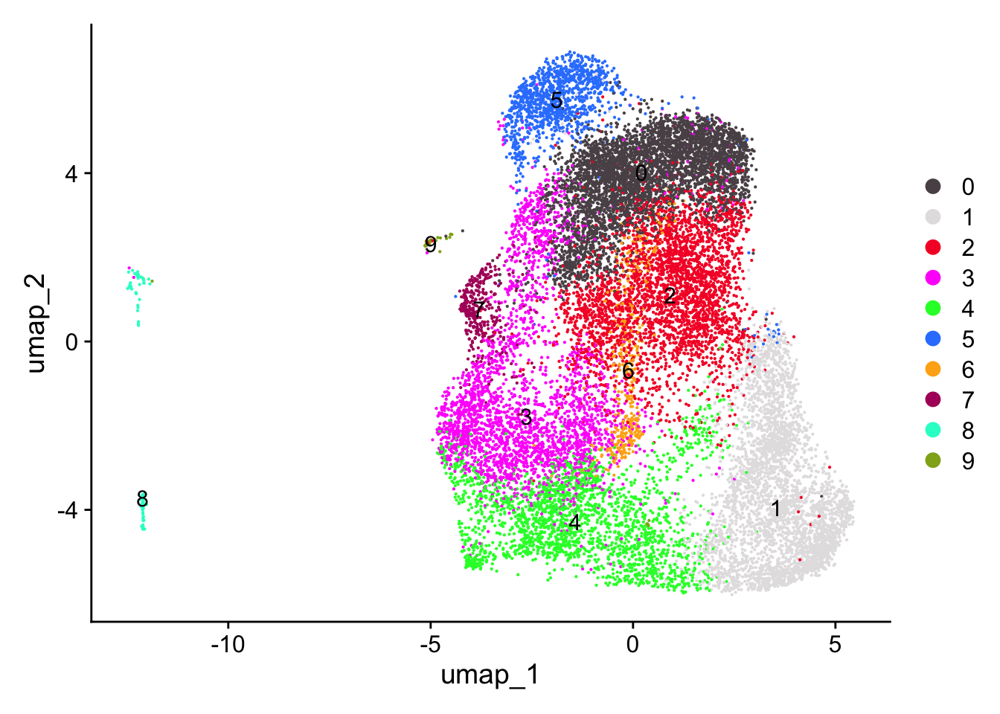
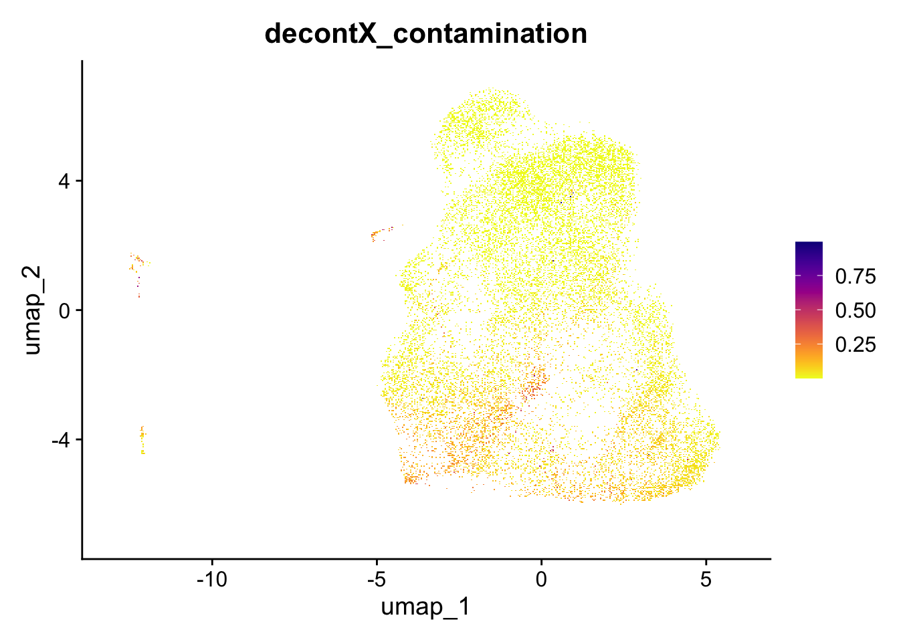
#ggsave(here("results/CITE-seq_contamination.pdf"), width = 4, height = 4)
scCustomize::VlnPlot_scCustom(obj, features = "decontX_contamination")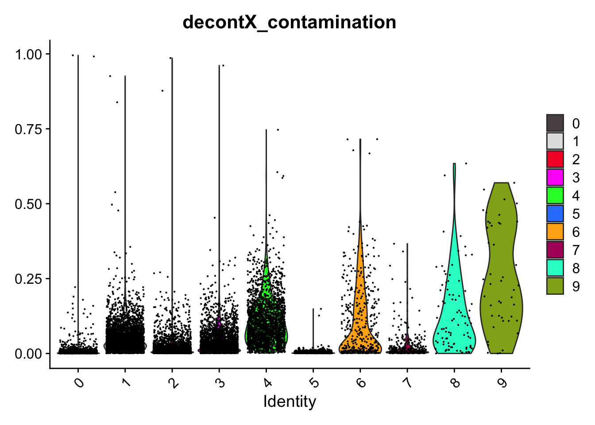
Notice how cluster 9 has high ambient RNA contamination – another sign that it’s not a real cell population. This is consistent with what we saw earlier when we examined marker genes for that cluster.
Whether you actually use the decontX-corrected counts for downstream analysis depends on how bad the contamination is. For most PBMC datasets, the contamination is moderate and the original counts work fine. But if you’re working with tissues that have a lot of cell death during dissociation (like solid tumors), ambient RNA correction can make a real difference. See also this walkthrough by Tim Burns for another example.
3.11 Remove contaminating clusters
Now that we’ve done doublet detection and ambient RNA estimation, let’s circle back to those suspicious clusters 8 and 9. We already saw that their marker genes point to dendritic cells/monocytes and basophils – not T cells. And cluster 9 had high ambient RNA contamination. Let’s remove them for our downstream analysis.
#>
#> 0 1 2 3 4 5 6 7 8 9
#> 4463 3472 3272 2869 2256 1181 442 348 0 0You still see cluster 8 and 9 with 0 cells. We need to drop the unused levels.
#>
#> 0 1 2 3 4 5 6 7
#> 4463 3472 3272 2869 2256 1181 442 348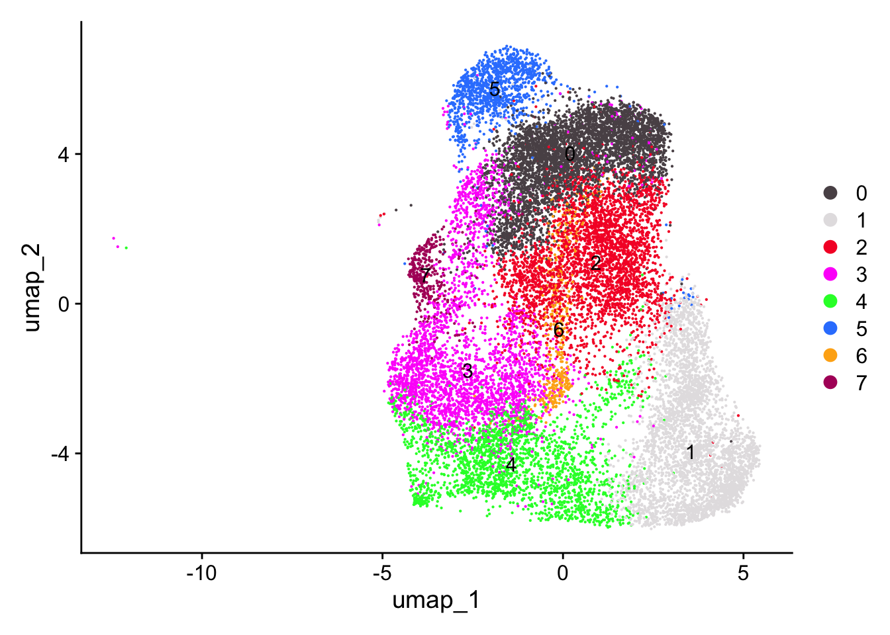
Save the cleaned Seurat object so you can pick up from here in later chapters without re-running everything.
3.12 Pseudo-bulk differential expression with DESeq2
Earlier, I mentioned that FindAllMarkers treats each cell as an independent observation. That’s fine for exploratory marker discovery (“what genes define this cluster?”), but it’s wrong for testing differences between conditions (“do activated T cells express more cytokines than resting T cells?”).
Why? Because cells from the same sample are not independent. If you have 2,000 CD4 T cells from donor A and 1,500 from donor B, you don’t have 3,500 independent observations – you have 2 biological replicates. Treating cells as independent massively inflates your false positive rate. This is one of the most common mistakes I see in single-cell papers. See Squair et al. (2021), “Confronting false discoveries in single-cell differential expression.”
The solution: aggregate counts from all cells of the same type within a sample into a “pseudo-bulk” profile, then use standard bulk RNA-seq tools like DESeq2 or edgeR. This is called pseudo-bulk analysis, and it’s the recommended approach for multi-sample, multi-condition comparisons.
I wrote a blog post about this: https://divingintogeneticsandgenomics.com/post/how-to-create-pseudobulk-from-single-cell-rnaseq-data/
Let’s walk through the full workflow with our PBMC data.
3.12.1 Step 1: Aggregate counts to pseudo-bulk
The idea is simple: for each cell type (cluster) in each sample, add up the raw counts across all cells. If you have 500 CD4 T cells from sample SRX5329394, you sum their counts gene-by-gene into one column. This gives you one “pseudo-bulk” profile per cluster per sample.
# We'll use the obj that's already in memory from the pipeline above
# Make sure the default assay is RNA and layers are joined
DefaultAssay(obj) <- "RNA"
obj <- JoinLayers(obj)
# check our metadata - we need condition and donor info
table(obj$condition, obj$sample)#>
#> SRX5329394 SRX5329395 SRX5329396 SRX5329397
#> activated 5032 0 4257 0
#> resting 0 4655 0 4359#>
#> SRX5329394 SRX5329395 SRX5329396 SRX5329397
#> 0 851 1792 598 1222
#> 1 626 888 794 1164
#> 2 554 1222 537 959
#> 3 1365 179 1063 262
#> 4 1043 99 852 262
#> 5 284 384 174 339
#> 6 105 86 109 142
#> 7 204 5 130 9Seurat v5 has AggregateExpression for this:
# Aggregate raw counts by cluster and sample
# This sums counts across all cells of the same cluster in the same sample
pseudo_bulk <- AggregateExpression(obj,
assays = "RNA",
group.by = c("seurat_clusters", "sample"),
return.seurat = FALSE)$RNA
# take a look at the column names
head(colnames(pseudo_bulk))#> [1] "g0_SRX5329394" "g0_SRX5329395" "g0_SRX5329396" "g0_SRX5329397"
#> [5] "g1_SRX5329394" "g1_SRX5329395"#> [1] 36601 32Each column is now a pseudo-bulk profile: one per cluster-sample combination. With ~8 clusters and 4 samples, we should have around 32 columns.
You can also use presto::collapse_counts() for this. I use presto when I want more control over the aggregation, but AggregateExpression is convenient within the Seurat ecosystem.
3.12.2 Step 2: Prepare metadata for DESeq2
DESeq2 needs a sample-level metadata table (not cell-level). Let’s create one:
# Parse cluster and sample from the column names
pseudo_meta <- data.frame(
id = colnames(pseudo_bulk)
) %>%
tidyr::separate(id, into = c("cluster", "sample"), sep = "_", remove = FALSE)
# Add condition and donor info
pseudo_meta <- pseudo_meta %>%
mutate(condition = case_when(
sample %in% c("SRX5329394", "SRX5329396") ~ "activated",
sample %in% c("SRX5329395", "SRX5329397") ~ "resting"
)) %>%
mutate(donor = case_when(
sample %in% c("SRX5329394", "SRX5329395") ~ "donorA",
sample %in% c("SRX5329396", "SRX5329397") ~ "donorB"
))
rownames(pseudo_meta) <- pseudo_meta$id
head(pseudo_meta)#> id cluster sample condition donor
#> g0_SRX5329394 g0_SRX5329394 g0 SRX5329394 activated donorA
#> g0_SRX5329395 g0_SRX5329395 g0 SRX5329395 resting donorA
#> g0_SRX5329396 g0_SRX5329396 g0 SRX5329396 activated donorB
#> g0_SRX5329397 g0_SRX5329397 g0 SRX5329397 resting donorB
#> g1_SRX5329394 g1_SRX5329394 g1 SRX5329394 activated donorA
#> g1_SRX5329395 g1_SRX5329395 g1 SRX5329395 resting donorA3.12.3 Step 3: Run DESeq2 for one cluster
Let’s test for differential expression between activated vs resting in cluster 0. This is the proper way to do a condition comparison.
library(DESeq2)
# Pick one cluster to demonstrate
# Note: Seurat adds a "g" prefix to cluster IDs in AggregateExpression output
cluster_id <- "g0"
# Subset to just this cluster
cluster_cols <- pseudo_meta %>%
dplyr::filter(cluster == cluster_id) %>%
pull(id)
counts_sub <- pseudo_bulk[, cluster_cols]
meta_sub <- pseudo_meta[cluster_cols, ]
# How many replicates per condition?
table(meta_sub$condition)#>
#> activated resting
#> 2 2We have 2 replicates per condition (one per donor). That’s the minimum for DESeq2. More replicates give more statistical power, but 2 is enough to demonstrate the workflow.
# Create DESeq2 object
# We test for condition effect while accounting for donor
dds <- DESeqDataSetFromMatrix(countData = counts_sub,
colData = meta_sub,
design = ~ condition)
# Filter low-count genes (keep genes with at least 10 counts total)
keep <- rowSums(counts(dds)) >= 10
dds <- dds[keep, ]
# Run DESeq2
dds <- DESeq(dds)
# Get results
res <- results(dds, contrast = c("condition", "activated", "resting"))
res_df <- as.data.frame(res) %>%
tibble::rownames_to_column("gene") %>%
arrange(padj)
head(res_df, 20)#> gene baseMean log2FoldChange lfcSE stat pvalue
#> 1 MIR155HG 280.16650 3.678174 0.3503551 10.498417 8.784067e-26
#> 2 TNIP3 67.64833 4.724571 0.5593499 8.446539 3.000658e-17
#> 3 ID2 989.81219 1.991271 0.2502514 7.957080 1.761473e-15
#> 4 SRGN 774.67427 1.809821 0.2438372 7.422253 1.151445e-13
#> 5 CCL4 59.57527 3.524216 0.5358404 6.576988 4.800739e-11
#> 6 GNG8 134.16053 2.456747 0.4057675 6.054568 1.407948e-09
#> 7 TNFRSF4 160.35436 2.451729 0.4041108 6.066972 1.303442e-09
#> 8 DUSP2 79.32623 2.601763 0.4406628 5.904205 3.543520e-09
#> 9 FOSL2 65.56336 3.452494 0.5952632 5.799945 6.633682e-09
#> 10 CCL3 25.82981 5.679565 1.0033964 5.660340 1.510734e-08
#> 11 LAG3 84.98725 2.426266 0.4372436 5.549003 2.873032e-08
#> 12 NAB2 41.00831 3.000490 0.5398019 5.558502 2.720998e-08
#> 13 CCL20 25.30605 3.915429 0.7248288 5.401868 6.595062e-08
#> 14 SPPL2A 107.97980 1.904628 0.3600765 5.289511 1.226441e-07
#> 15 FRMD4B 148.97473 2.424516 0.4857846 4.990928 6.008997e-07
#> 16 WARS 46.37892 2.440800 0.4950602 4.930309 8.209951e-07
#> 17 SORL1 104.84387 -1.979320 0.4052636 -4.884029 1.039396e-06
#> 18 CCL4L2 17.90006 4.663896 0.9800395 4.758886 1.946644e-06
#> 19 SECTM1 64.82108 2.331818 0.4923291 4.736299 2.176560e-06
#> 20 TUBA1B 362.49471 1.456280 0.3095603 4.704351 2.546752e-06
#> padj
#> 1 7.169556e-22
#> 2 1.224569e-13
#> 3 4.792382e-12
#> 4 2.349524e-10
#> 5 7.836726e-08
#> 6 1.641667e-06
#> 7 1.641667e-06
#> 8 3.615277e-06
#> 9 6.016012e-06
#> 10 1.233061e-05
#> 11 1.954141e-05
#> 12 1.954141e-05
#> 13 4.140684e-05
#> 14 7.150153e-05
#> 15 3.269695e-04
#> 16 4.188101e-04
#> 17 4.990326e-04
#> 18 8.826951e-04
#> 19 9.350044e-04
#> 20 1.039329e-03With only 2 replicates per condition, the statistical power is limited. But you see the pattern – the genes with smallest adjusted p-values are the ones most consistently different between activated and resting cells in this cluster.
3.12.4 Step 4: Run DESeq2 for all clusters with purrr
You see the pattern – we wrote code for one cluster, now we can iterate over all clusters. Same principle as Chapter 2.
run_deseq2_cluster <- function(cluster_id, pseudo_bulk, pseudo_meta) {
# Subset to this cluster
cluster_cols <- pseudo_meta %>%
dplyr::filter(cluster == cluster_id) %>%
pull(id)
counts_sub <- pseudo_bulk[, cluster_cols]
meta_sub <- pseudo_meta[cluster_cols, ]
# Need at least 2 samples per condition
if (any(table(meta_sub$condition) < 2)) {
return(NULL)
}
# Create DESeq2 object
dds <- DESeqDataSetFromMatrix(countData = counts_sub,
colData = meta_sub,
design = ~ condition)
# Filter low-count genes
keep <- rowSums(counts(dds)) >= 10
dds <- dds[keep, ]
# Run DESeq2
dds <- DESeq(dds)
# Get results
res <- results(dds, contrast = c("condition", "activated", "resting"))
res_df <- as.data.frame(res) %>%
tibble::rownames_to_column("gene") %>%
arrange(padj) %>%
mutate(cluster = cluster_id)
return(res_df)
}
# Run for all clusters
all_clusters <- unique(pseudo_meta$cluster)
pseudobulk_de_results <- purrr::map(all_clusters,
~run_deseq2_cluster(.x, pseudo_bulk, pseudo_meta)) %>%
purrr::compact() %>% # remove NULLs (clusters with too few samples)
bind_rows()
# How many significant genes per cluster?
pseudobulk_de_results %>%
dplyr::filter(padj < 0.05) %>%
dplyr::count(cluster) %>%
arrange(desc(n))#> cluster n
#> 1 g3 540
#> 2 g4 468
#> 3 g1 214
#> 4 g6 72
#> 5 g0 70
#> 6 g2 49
#> 7 g7 14This is pretty cool – one function, one purrr::map() call, and you have proper pseudo-bulk DE results for every cluster.
3.12.5 Step 5: Visualize the results
library(ggplot2)
# Volcano plot for one cluster
cluster0_res <- pseudobulk_de_results %>%
dplyr::filter(cluster == "g0")
ggplot(cluster0_res, aes(x = log2FoldChange, y = -log10(pvalue))) +
geom_point(aes(color = padj < 0.05), size = 0.5) +
scale_color_manual(values = c("grey70", "red")) +
labs(title = "Cluster g0: Activated vs Resting",
x = "log2 Fold Change", y = "-log10(p-value)") +
theme_bw(base_size = 14)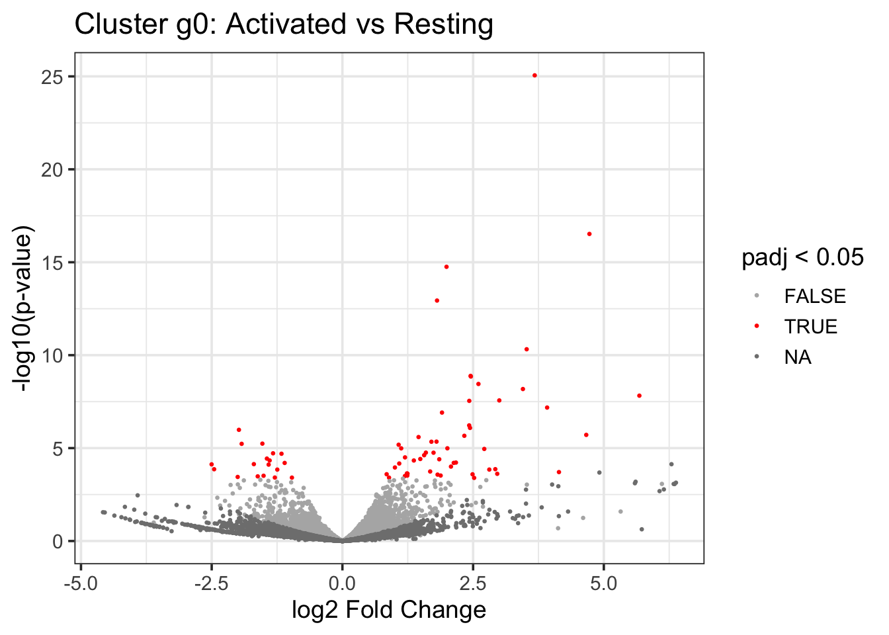
3.12.6 When to use pseudo-bulk vs FindAllMarkers
To be clear about when to use each:
FindAllMarkers: “What genes define this cluster?” – comparing one cluster vs all others. Good for marker discovery. Each cell is a data point, and that’s OK here because you’re characterizing clusters, not testing conditions.Pseudo-bulk DESeq2: “What genes change between conditions within this cell type?” – comparing activated vs resting within CD4 T cells, for example. You must aggregate to pseudo-bulk because cells within a sample are not independent.
I see people use FindMarkers(obj, ident.1 = "activated", ident.2 = "resting") to compare conditions. This is wrong if you have multiple samples. You’ll get tons of “significant” genes, but most are false positives. Use pseudo-bulk.
For more details, read:
- My blog post: https://divingintogeneticsandgenomics.com/post/how-to-create-pseudobulk-from-single-cell-rnaseq-data/
- Squair et al. (2021): https://www.nature.com/articles/s41467-021-25960-2
- The muscat paper: https://www.nature.com/articles/s41467-020-19894-4
- sc-best-practices.org DE chapter: https://www.sc-best-practices.org/conditions/differential_gene_expression.html
3.13 What we covered
This was a big chapter. We went from filtered count matrices to a clustered Seurat object – creating the object, adding metadata, doing additional QC, running the full pipeline (normalize, variable genes, scale, PCA, Harmony integration, UMAP, clustering), finding markers, and removing low-quality clusters. We dug into the math behind normalization and log2FC calculations, talked about how to choose parameters, and ran a proper pseudo-bulk DESeq2 workflow for condition comparisons.
The cleaned Seurat object is saved at data/pbmc_seurat_obj.rds and is ready for cell type annotation in Chapter 4 (using SingleR, clustifyr, and Seurat label transfer).
3.13.1 Things that go wrong
I’ve seen all of these in practice:
- Blindly using default parameters. Always check elbow plots, try multiple resolutions, visualize before and after integration. Don’t just copy-paste the pipeline and call it a day.
- Over-integrating. Too aggressive integration removes real biological signal. After integrating, check that your condition effects (activated vs resting) are still there.
- Treating Wilcoxon p-values as definitive. These assume cell independence, which is violated in scRNA-seq. Use them for ranking markers, not for hypothesis testing.
- Not plotting QC metrics on your clusters. Always plot percent.mt, nFeature_RNA on your final UMAP. I’ve caught artifact clusters this way more than once.
- Ignoring doublets and ambient RNA. These confound everything downstream. Check doublet scores and contamination levels.
- Sticking with one normalization method. When in doubt, try SCTransform and compare. Sometimes it reveals populations that LogNormalize misses.
3.13.2 Further reading
Official documentation:
- Seurat tutorials: https://satijalab.org/seurat/articles/pbmc3k_tutorial.html.
- Seurat v5 new features: https://satijalab.org/seurat/articles/seurat5_essential_commands.
- BPCells integration: https://satijalab.org/seurat/articles/seurat5_bpcells_interaction_vignette.
Best practices guides:
- sc-best-practices.org - Preprocessing: https://www.sc-best-practices.org/preprocessing_visualization/normalization.html.
- sc-best-practices.org - Integration: https://www.sc-best-practices.org/integration/integrating-datasets.html.
- OSCA book - Normalization: https://bioconductor.org/books/release/OSCA.basic/normalization.html.
- OSCA book - Feature selection: https://bioconductor.org/books/release/OSCA.basic/feature-selection.html.
Key papers: - Harmony: Korsunsky et al. (2019), “Fast, sensitive and accurate integration of single-cell data with Harmony”. - SCTransform: Choudhary & Satija (2022), “Comparison and evaluation of statistical error models for scRNA-seq”. - Pseudo-bulk DE: Squair et al. (2021), “Confronting false discoveries in single-cell differential expression”. - Wilcoxon nuances: Soneson & Robinson (2018), “Bias, robustness and scalability in single-cell differential expression analysis”.
My blog posts: - S3 and S4 objects in R: https://divingintogeneticsandgenomics.com/post/s3-and-s4-objects-in-r-explained/ - Note: Check out more scRNA-seq posts on my blog for practical tips and pitfalls!
3.13.3 Key takeaways
- The standard pipeline is a template, not gospel. Adjust parameters based on your data.
- Always visualize. Elbow plots, UMAPs colored by batch and QC metrics – look at your data with your eyes.
- Integration is not always necessary. Check if you actually have batch effects first.
- Normalization method matters. LogNormalize is fast but SCTransform is often better.
- Resolution is subjective. Try multiple values, use clustree to see what’s stable.
- Use Wilcoxon for marker discovery, pseudo-bulk for proper condition comparisons.
- QC is iterative. You might need to remove low-quality clusters even after initial filtering.
- Understanding the math (how log2FC is calculated, what normalization does) helps you interpret results and catch problems.
Session Information
#> R version 4.4.1 (2024-06-14)
#> Platform: aarch64-apple-darwin20
#> Running under: macOS Sonoma 14.1
#>
#> Matrix products: default
#> BLAS: /Library/Frameworks/R.framework/Versions/4.4-arm64/Resources/lib/libRblas.0.dylib
#> LAPACK: /Library/Frameworks/R.framework/Versions/4.4-arm64/Resources/lib/libRlapack.dylib; LAPACK version 3.12.0
#>
#> locale:
#> [1] en_US.UTF-8/en_US.UTF-8/en_US.UTF-8/C/en_US.UTF-8/en_US.UTF-8
#>
#> time zone: America/New_York
#> tzcode source: internal
#>
#> attached base packages:
#> [1] grid stats4 stats graphics grDevices utils datasets
#> [8] methods base
#>
#> other attached packages:
#> [1] DESeq2_1.44.0 celda_1.20.0
#> [3] Matrix_1.7-0 scDblFinder_1.18.0
#> [5] genefilter_1.86.0 ComplexHeatmap_2.20.0
#> [7] scCustomize_2.1.2 harmony_1.2.0
#> [9] Rcpp_1.0.13 DropletUtils_1.24.0
#> [11] stringr_1.5.1 ggplot2_3.5.1
#> [13] dplyr_1.1.4 here_1.0.1
#> [15] Seurat_5.1.0 SeuratObject_5.0.2
#> [17] sp_2.1-4 SingleCellExperiment_1.26.0
#> [19] SummarizedExperiment_1.34.0 Biobase_2.64.0
#> [21] GenomicRanges_1.56.1 GenomeInfoDb_1.40.1
#> [23] IRanges_2.38.1 S4Vectors_0.42.1
#> [25] BiocGenerics_0.50.0 MatrixGenerics_1.16.0
#> [27] matrixStats_1.3.0
#>
#> loaded via a namespace (and not attached):
#> [1] spatstat.sparse_3.1-0 bitops_1.0-8
#> [3] lubridate_1.9.3 doParallel_1.0.17
#> [5] httr_1.4.7 RColorBrewer_1.1-3
#> [7] tools_4.4.1 sctransform_0.4.1
#> [9] utf8_1.2.4 R6_2.5.1
#> [11] HDF5Array_1.32.1 lazyeval_0.2.2
#> [13] uwot_0.2.2 GetoptLong_1.0.5
#> [15] rhdf5filters_1.16.0 withr_3.0.0
#> [17] gridExtra_2.3 progressr_0.14.0
#> [19] cli_3.6.3 Cairo_1.6-2
#> [21] spatstat.explore_3.3-2 fastDummies_1.7.4
#> [23] enrichR_3.2 labeling_0.4.3
#> [25] sass_0.4.9 prismatic_1.1.2
#> [27] spatstat.data_3.1-2 ggridges_0.5.6
#> [29] pbapply_1.7-2 Rsamtools_2.20.0
#> [31] dbscan_1.2-0 R.utils_2.12.3
#> [33] scater_1.32.1 WriteXLS_6.7.0
#> [35] parallelly_1.38.0 limma_3.60.4
#> [37] RSQLite_2.3.7 rstudioapi_0.16.0
#> [39] generics_0.1.3 shape_1.4.6.1
#> [41] BiocIO_1.14.0 combinat_0.0-8
#> [43] gtools_3.9.5 ica_1.0-3
#> [45] spatstat.random_3.3-1 ggbeeswarm_0.7.2
#> [47] fansi_1.0.6 abind_1.4-5
#> [49] R.methodsS3_1.8.2 lifecycle_1.0.4
#> [51] yaml_2.3.10 edgeR_4.2.1
#> [53] snakecase_0.11.1 rhdf5_2.48.0
#> [55] SparseArray_1.4.8 Rtsne_0.17
#> [57] blob_1.2.4 paletteer_1.6.0
#> [59] promises_1.3.0 dqrng_0.4.1
#> [61] crayon_1.5.3 miniUI_0.1.1.1
#> [63] lattice_0.22-6 beachmat_2.20.0
#> [65] cowplot_1.1.3 annotate_1.82.0
#> [67] KEGGREST_1.44.1 magick_2.8.5
#> [69] metapod_1.12.0 pillar_1.9.0
#> [71] knitr_1.48 fishpond_2.10.0
#> [73] rjson_0.2.22 xgboost_1.7.8.1
#> [75] future.apply_1.11.2 codetools_0.2-20
#> [77] leiden_0.4.3.1 glue_1.8.0
#> [79] spatstat.univar_3.0-0 data.table_1.15.4
#> [81] vctrs_0.6.5 png_0.1-8
#> [83] spam_2.10-0 gtable_0.3.5
#> [85] rematch2_2.1.2 cachem_1.1.0
#> [87] xfun_0.52 S4Arrays_1.4.1
#> [89] mime_0.12 RcppEigen_0.3.4.0.1
#> [91] survival_3.6-4 iterators_1.0.14
#> [93] bluster_1.14.0 statmod_1.5.0
#> [95] fitdistrplus_1.2-1 ROCR_1.0-11
#> [97] nlme_3.1-164 bit64_4.0.5
#> [99] RcppAnnoy_0.0.22 rprojroot_2.0.4
#> [101] bslib_0.8.0 irlba_2.3.5.1
#> [103] vipor_0.4.7 KernSmooth_2.23-24
#> [105] DBI_1.2.3 colorspace_2.1-1
#> [107] ggrastr_1.0.2 tidyselect_1.2.1
#> [109] bit_4.0.5 compiler_4.4.1
#> [111] curl_5.2.1 BiocNeighbors_1.22.0
#> [113] DelayedArray_0.30.1 plotly_4.10.4
#> [115] bookdown_0.40 rtracklayer_1.64.0
#> [117] scales_1.3.0 lmtest_0.9-40
#> [119] digest_0.6.36 goftest_1.2-3
#> [121] spatstat.utils_3.1-0 presto_1.0.0
#> [123] rmarkdown_2.27 XVector_0.44.0
#> [125] RhpcBLASctl_0.23-42 htmltools_0.5.8.1
#> [127] pkgconfig_2.0.3 sparseMatrixStats_1.16.0
#> [129] highr_0.11 fastmap_1.2.0
#> [131] rlang_1.1.4 GlobalOptions_0.1.2
#> [133] htmlwidgets_1.6.4 UCSC.utils_1.0.0
#> [135] shiny_1.9.0 DelayedMatrixStats_1.26.0
#> [137] farver_2.1.2 jquerylib_0.1.4
#> [139] zoo_1.8-12 jsonlite_1.8.8
#> [141] BiocParallel_1.38.0 R.oo_1.26.0
#> [143] BiocSingular_1.20.0 RCurl_1.98-1.16
#> [145] magrittr_2.0.3 scuttle_1.14.0
#> [147] GenomeInfoDbData_1.2.12 dotCall64_1.1-1
#> [149] patchwork_1.2.0 Rhdf5lib_1.26.0
#> [151] munsell_0.5.1 viridis_0.6.5
#> [153] reticulate_1.38.0 stringi_1.8.4
#> [155] MCMCprecision_0.4.0 zlibbioc_1.50.0
#> [157] MASS_7.3-60.2 plyr_1.8.9
#> [159] parallel_4.4.1 listenv_0.9.1
#> [161] ggrepel_0.9.5 forcats_1.0.0
#> [163] deldir_2.0-4 Biostrings_2.72.1
#> [165] splines_4.4.1 tensor_1.5
#> [167] circlize_0.4.16 locfit_1.5-9.10
#> [169] igraph_2.0.3 spatstat.geom_3.3-2
#> [171] RcppHNSW_0.6.0 ScaledMatrix_1.12.0
#> [173] reshape2_1.4.4 XML_3.99-0.17
#> [175] evaluate_0.24.0 scran_1.32.0
#> [177] ggprism_1.0.5 foreach_1.5.2
#> [179] httpuv_1.6.15 RANN_2.6.1
#> [181] tidyr_1.3.1 purrr_1.0.2
#> [183] polyclip_1.10-7 clue_0.3-65
#> [185] future_1.34.0 scattermore_1.2
#> [187] rsvd_1.0.5 janitor_2.2.0
#> [189] xtable_1.8-4 restfulr_0.0.15
#> [191] svMisc_1.2.3 RSpectra_0.16-2
#> [193] later_1.3.2 viridisLite_0.4.2
#> [195] tibble_3.2.1 memoise_2.0.1
#> [197] AnnotationDbi_1.66.0 beeswarm_0.4.0
#> [199] GenomicAlignments_1.40.0 cluster_2.1.6
#> [201] timechange_0.3.0 globals_0.16.3